<!doctype html>
<html lang="en">
<head>
  <meta charset="utf-8">
  <meta name="viewport" content="width=device-width, initial-scale=1">
  <title>arxiv digest — 2026-08-12</title>
  <style>
:root {
  --bg: #ffffff;
  --fg: #1f2328;
  --muted: #59636e;
  --border: #d0d7de;
  --card: #f6f8fa;
  --link: #0969da;
}
body {
  max-width: 980px;
  margin: 0 auto;
  padding: 2rem 1rem 5rem;
  font-family: -apple-system, BlinkMacSystemFont, "Segoe UI", Helvetica, Arial, sans-serif;
  line-height: 1.55;
  color: var(--fg);
  background: var(--bg);
}
a { color: var(--link); }
img { max-width: 100%; height: auto; }
pre, code { background: var(--card); border-radius: 6px; }
pre { padding: 1rem; overflow-x: auto; }
blockquote { border-left: 4px solid var(--border); padding-left: 1rem; color: var(--muted); }
details { margin: 0.6rem 0; }
summary { cursor: pointer; font-weight: 600; }
.paper-figures-scroll {
  display: flex;
  gap: 1rem;
  overflow-x: auto;
  overscroll-behavior-x: contain;
  padding: 0.75rem 0.25rem 1rem;
  margin: 1rem 0 1.25rem;
  border-top: 1px solid var(--border);
  border-bottom: 1px solid var(--border);
  scroll-snap-type: x proximity;
}
.paper-figure-card {
  flex: 0 0 min(260px, 72vw);
  scroll-snap-align: start;
  background: var(--card);
  border: 1px solid var(--border);
  border-radius: 12px;
  padding: 0.55rem;
}
.paper-figure-card img {
  display: block;
  width: 100%;
  max-height: 240px;
  object-fit: contain;
  background: white;
  border-radius: 8px;
}
.paper-figure-caption {
  display: block;
  margin-top: 0.5rem;
  color: var(--muted);
  font-size: 0.85rem;
}
.figure-strip-hint {
  color: var(--muted);
  font-size: 0.9rem;
  margin-bottom: -0.3rem;
}
</style>
  <!-- MathJax: renders $...$ inline math and $$...$$ display math, plus
       \(...\) and \[...\]. Loaded from the official CDN; works offline
       once cached. Configured to skip code/pre blocks so arxiv IDs that
       look like dollar amounts don't get mangled. -->
  <script>
    window.MathJax = {
      tex: {
        inlineMath: [['$', '$'], ['\\(', '\\)']],
        displayMath: [['$$', '$$'], ['\\[', '\\]']],
        processEscapes: true,
        processEnvironments: true
      },
      options: {
        skipHtmlTags: ['script', 'noscript', 'style', 'textarea', 'pre', 'code'],
        ignoreHtmlClass: 'tex2jax_ignore',
        processHtmlClass: 'tex2jax_process'
      }
    };
  </script>
  <script id="MathJax-script" async
    src="https://cdn.jsdelivr.net/npm/mathjax@3/es5/tex-chtml.js"></script>
</head>
<body>
<header style="background-color: #333; color: white; padding: 15px; margin-bottom: 20px;">
  <h1 style="margin: 0; font-size: 24px;">
    <a href="https://ochelpan.github.io/arXiv_clean/" style="color: white; text-decoration: none;">Main</a>
  </h1>
</header>

<h1>Daily arXiv Report</h1>

<hr>
<p>
<a href="index.html">← Index</a>
 · <a href="papers_04.html">← Previous</a> · <a href="papers_06.html">Next →</a>
</p>
<hr>

<h2>Papers 81–100</h2>
<p><a id="paper-2608.07806"></a></p>
<h3 id="a-universal-entanglement-witness-generator"><a href="http://arxiv.org/abs/2608.07806v1">A Universal Entanglement Witness Generator</a></h3>
<p><strong>Authors:</strong> Aiden R. Rosebush, Alexander C. B. Greenwood, Andi Shahaj, Li Qian<br>
<strong>Type:</strong> both · <strong>Category:</strong> quantum information and computing · <strong>PDF:</strong> <a href="https://arxiv.org/pdf/2608.07806v1">https://arxiv.org/pdf/2608.07806v1</a><br>
<strong>Analysis basis:</strong> full PDF text, analyzed in chunks
<strong>Topic relevance:</strong> <code>quantum measurements</code> <strong>3/5</strong> · <code>QC/QI experiment</code> <strong>1/5</strong> · <code>methods for driven-dissipative</code> <strong>1/5</strong></p>
<div class="figure-strip-hint">↔ Scroll figures horizontally</div>
<div class="paper-figures-scroll">
<figure class="paper-figure-card">
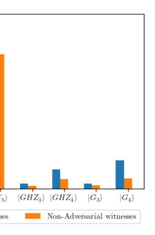
<figcaption class="paper-figure-caption"><b>Fig 1.</b> FIG. 1. Runtimes, in seconds, of adversarial vs non-adversarial methods.</figcaption>
</figure>
<figure class="paper-figure-card">
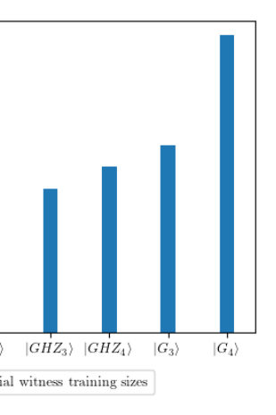
<figcaption class="paper-figure-caption"><b>Fig 2.</b> FIG. 2. Number of separable training states of adversarial qubit witnesses.</figcaption>
</figure>
<figure class="paper-figure-card">
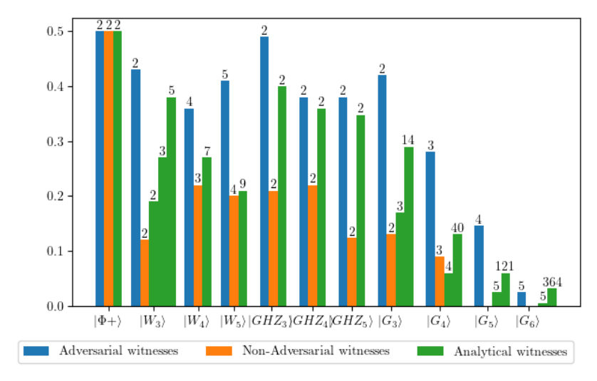
<figcaption class="paper-figure-caption"><b>Fig 3.</b> FIG. 3. Noise tolerances of analytic and generated qubit witnesses. The number of measurement settings for each witnesss is indicated above each bar. Each group of bars are shown above the label indicating the target state.</figcaption>
</figure>
<figure class="paper-figure-card">
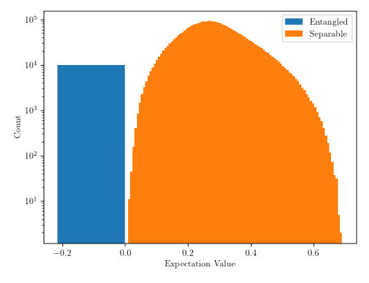
<figcaption class="paper-figure-caption"><b>Fig 4.</b> FIG. 4. Histogram of expectation values of test data for a 3 qubit W state witness with 2 measurement settings generated with our adversarial training method. Shown are the counts of 3 million separable test states (in orange) Werner states based on the target W state up to the maximum noise tolerance of the witness (in blue). Notice the separable states have only positive expectation values, meeting the definition of an entanglement witness. Here we use 100 bins for each type of state, with a binsize of about 0.007.</figcaption>
</figure>
<figure class="paper-figure-card">
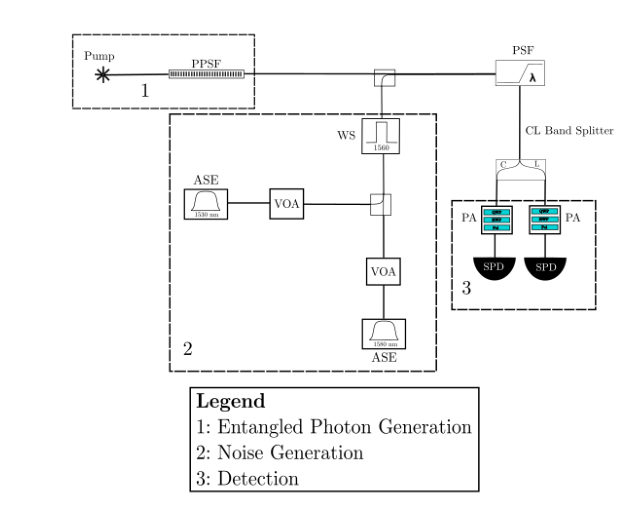
<figcaption class="paper-figure-caption"><b>Fig 5.</b> FIG. 5. Experimental set up for (1) creating the noisy bipartite entangled photonic state (box 1); (2) adding noise to the entangled state (box 2); and (3) local projective measurements on each photon (box 3). We then combined the signal and the noise with a 50/50 splitter, put the total signal through a Pump Suppression Filter (PSF) before separating the C and L band components for measurement. We used Polarization Analyzers (PAs) consisting of a quarter waveplate, and a half waveplate to project the photons onto the polarizer before the single photon detectors.</figcaption>
</figure>
</div>

<p><strong>Summary.</strong> This paper introduces a universal machine-learning framework to generate highly robust entanglement witnesses for multipartite qubit and qudit systems. By optimizing witness construction using adversarial training, it overcomes limitations in measurement efficiency and noise tolerance compared to prior methods. This tool is vital for experimentally verifying genuine quantum entanglement across diverse physical platforms.</p>
<p><strong>Why it may be interesting.</strong> This work provides a powerful, automated tool for certifying entanglement in complex quantum systems, which is crucial for validating experimental results across various platforms (photonic/superconducting).</p>
<details>
<summary>Detailed structure</summary>
<p><strong>Main problem.</strong> The challenge is constructing entanglement witnesses that are simultaneously noise-robust, measurement-economical, and applicable to complex systems beyond simple qubits.</p>
<p><strong>Main result.</strong> The authors propose a general machine-learning pipeline that generates superior entanglement witnesses with greater noise tolerance using fewer local measurements than existing methods.</p>
<p><strong>Method.</strong> A novel ML approach trains an entanglement witness by optimizing for noise tolerance via gradient descent and adversarial training, requiring only user-specified local measurement settings.</p>
<p><strong>Model / system.</strong> The method is general, applicable to multipartite qubit and qudit systems (d-level systems), including non-stabilizer states. It tests on various structured states like Bell, GHZ, W, and hypergraph states.</p>
<p><strong>Key observables.</strong> Entanglement witnesses ($W$), noise tolerance parameter ($p$), expectation values ($\langle W 
angle$).</p>
<p><strong>Important parameters / regimes.</strong> Number of qudits ($N$), dimension ($d$), user-specified number of measurement settings ($M$).</p>
<p><strong>Assumptions / limitations.</strong> The method assumes that the required training set size becomes independent of system size under adversarial training, and it aims to surpass existing methods' limitations regarding setting count.</p>
<p><strong>Figures summary.</strong> Not specified (Notes mention testing on various state types rather than describing figure content).</p>
<p><strong>Paper structure.</strong> The paper first establishes the need for robust witnesses, then details the ML framework involving prototype witness generation ($W_0$), refinement via differential programming to find $
ho_s$, and finally strengthening it with adversarial training.</p>
</details>
<details>
<summary>Abstract</summary>
<p>Entanglement witnesses are essential for certifying entanglement, yet constructing ones that are both noise-robust and economical in measurement settings remains challenging - particularly beyond qubits and for non-stabilizer ("magic") states. We present a machine-learning method that, given a target state and a user-specified number of measurement settings, generates an entanglement witness optimized for noise tolerance in the neighborhood of that state, requiring only local measurements. The approach is fully general, applying to multipartite qubit and qudit systems alike, including non-stabilizer states. For N qudits of dimension d, we train on the fully-separable eigenstates of each qudit's SU(d) generators to find a prototype witness, then tune the witness's bias term via gradient descent to maximize noise tolerance. Adversarial training further strengthens the witnesses, delivering greater noise tolerance with even fewer settings; critically, under this scheme the required training-set size becomes independent of system size. We package the entire pipeline as an automated script that, in every case we tested, produces witnesses surpassing all existing methods in noise tolerance and/or number of measurement settings. We demonstrate the method on Bell, GHZ, W, and hypergraph states, along with a range of qudit states, spanning 2-6 qubits, bipartite qudits up to d=10, and tripartite qutrits. Our witnesses achieve perfect accuracy across both physical experimental test states and large numerical sets of separable mixed states-including 30 million test states for a 3-qubit W-state witness and 10 million for a 4-qubit hypergraph-state witness-and we experimentally confirm the noise tolerance of Bell- and hypergraph state witnesses on both photonic and superconducting platforms, respectively.</p>
</details>
<p><sub><a href="#top">↑ back to top</a></sub></p>

<p><a id="paper-2608.07893"></a></p>
<h3 id="breaking-the-curse-of-dimensionality-in-quantum-pde-solvers-via-gevrey-regularity"><a href="http://arxiv.org/abs/2608.07893v1">Breaking the Curse of Dimensionality in Quantum PDE Solvers via Gevrey Regularity</a></h3>
<p><strong>Authors:</strong> Pooya Ronagh, Mariia Sobchuk, Xiaoran Li, Arsalan Motamedi, Grecia Castelazo, Ala Shayeghi<br>
<strong>Type:</strong> theory · <strong>Category:</strong> quantum information and computing · <strong>PDF:</strong> <a href="https://arxiv.org/pdf/2608.07893v1">https://arxiv.org/pdf/2608.07893v1</a><br>
<strong>Analysis basis:</strong> full PDF text, analyzed in chunks
<strong>Topic relevance:</strong> <code>analog quantum simulation</code> <strong>3/5</strong> · <code>Keldysh / 2PI / non-Gaussian methods</code> <strong>1/5</strong> · <code>quantum measurements</code> <strong>1/5</strong></p>
<div class="figure-strip-hint">↔ Scroll figures horizontally</div>
<div class="paper-figures-scroll">
<figure class="paper-figure-card">
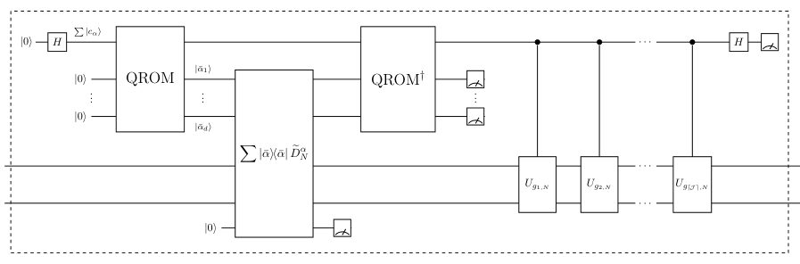
<figcaption class="paper-figure-caption"><b>Fig 1.</b> FIG. 1. The circuit for implementing the operator LN using the LCU in (38). The circuit for implementing the unitary P |¯α⟩⟨¯α| eDα N is shown in Fig. 2.</figcaption>
</figure>
<figure class="paper-figure-card">
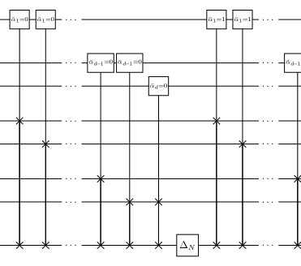
<figcaption class="paper-figure-caption"><b>Fig 2.</b> FIG. 2. The circuit for the block encoding of P</figcaption>
</figure>
<figure class="paper-figure-card">
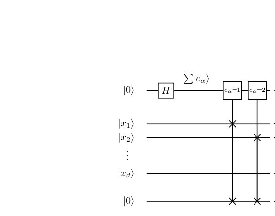
<figcaption class="paper-figure-caption"><b>Fig 3.</b> FIG. 3. The circuit for the block encoding of the Laplacian operator.</figcaption>
</figure>
<figure class="paper-figure-card">
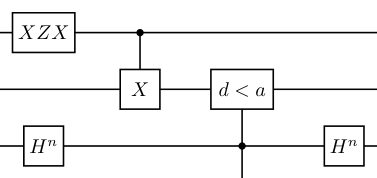
<figcaption class="paper-figure-caption"><b>Fig 4.</b> FIG. 4. Circuit for ∆N, combining the block-encodings of Fig. 5 via the ctrl register: a controlled bit flip attaches the optional X gate distinguishing U+ from U−, an additional single-qubit gate on ctrl supplies the −1 phase attached to the D−branch, and the shared comparator C&lt; then acts on anc and data exactly as in Figs. 5a and 5b.</figcaption>
</figure>
<figure class="paper-figure-card">
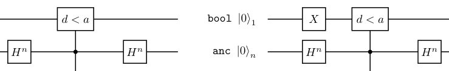
<figcaption class="paper-figure-caption"><b>Fig 5.</b> FIG. 5. Block-encodings of D−(a) and D+ (b) (Proposition C.1). In both circuits a uniform superposition over anc is compared against data using C&lt;, and the comparison bit is written onto bool; the two are identical except that, in (b), an X gate is applied to bool before the comparator, flipping which branch is selected.</figcaption>
</figure>
</div>

<p><strong>Summary.</strong> This paper develops a theoretical framework showing that by leveraging the mathematical concept of Gevrey regularity, one can efficiently solve high-dimensional linear Partial Differential Equations (PDEs) on a quantum computer. This approach overcomes classical scaling limitations and provides a pathway to achieving polynomial quantum speedups for simulating complex many-body systems in condensed matter physics.</p>
<p><strong>Why it may be interesting.</strong> This work directly addresses how mathematical properties (smoothness) dictate the feasibility and scaling of quantum computation for fundamental physics problems like electronic structure calculations. The explicit link between Gevrey classes and polynomial speedup is highly relevant to designing practical quantum algorithms for condensed matter theory.</p>
<details>
<summary>Detailed structure</summary>
<p><strong>Main problem.</strong> The core problem is overcoming the 'Curse of Dimensionality' when using quantum algorithms to solve high-precision Partial Differential Equations (PDEs).</p>
<p><strong>Main result.</strong> The authors establish a framework showing that utilizing Gevrey regularity allows for efficient, polynomial-degree quantum speedups in solving linear PDEs at varying target precisions.</p>
<p><strong>Method.</strong> They connect function smoothness (via the Gevrey hierarchy) to the cost of preparing high-precision Fourier-basis amplitude encodings and apply this to solve discretized linear PDE systems using QLSA techniques.</p>
<p><strong>Model / system.</strong> The methods are applied to general linear PDEs, including those arising in many-body quantum simulations (like the Sternheimer equation derived from DFT) for probing atomistic systems.</p>
<p><strong>Key observables.</strong> Linear response observables such as density response ($\delta
ho$), induced potentials ($\delta V_H$, $\delta V_{xc}$), and general correlation functions.</p>
<p><strong>Important parameters / regimes.</strong> Target precision ($\epsilon$), Gevrey smoothness parameter ($s$), cutoff mode ($N$), and the dimensionality of the problem ($d$).</p>
<p><strong>Assumptions / limitations.</strong> The analysis relies heavily on assuming $s$-Gevrey regularity for the solutions to guarantee polynomial scaling in dimension, and it requires using a closure approximation when extending to higher-order correlation functions.</p>
<p><strong>Figures summary.</strong> Table I compares classical vs. quantum complexity bounds for solving PDEs; Table II relates quantum hardness to function smoothness classes via Fourier coefficient decay rates.</p>
<p><strong>Paper structure.</strong> The paper first establishes the theoretical link between Gevrey regularity and quantum encoding costs, then specializes this framework to solve general linear PDEs using Fourier methods, and finally applies this machinery to build a hierarchy of many-body simulation pipelines for atomistic systems.</p>
</details>
<details>
<summary>Abstract</summary>
<p>We connect different degrees of smoothness of real-valued periodic functions to the cost of preparing their high-precision Fourier-basis amplitude encodings as quantum states. Our central observation is that the Gevrey hierarchy, which stratifies the space between smooth and analytic functions, provides a natural class for high-precision quantum algorithms. We then specialize to solving general linear partial differential equations (PDEs), showing how our Fourier methods do so efficiently at varying target precisions on a quantum computer. This also demonstrates how our framework enables passage from query-complexity results to explicit elementary gate counts. As an application, we introduce a hierarchy of many-body quantum simulation pipelines that harness these high-precision algorithms to probe the linear response of atomistic systems in first quantization. Each level of the hierarchy unlocks a further polynomial-degree quantum speedup, yielding a gradual improvement in simulation efficiency as quantum computers scale.</p>
</details>
<p><sub><a href="#top">↑ back to top</a></sub></p>

<p><a id="paper-2608.09375"></a></p>
<h3 id="effective-one-body-interactions-due-to-the-presence-of-a-liquid-vapor-interface"><a href="http://arxiv.org/abs/2608.09375v1">Effective one-body interactions due to the presence of a liquid-vapor interface</a></h3>
<p><strong>Authors:</strong> Melih Gül, Roland Roth<br>
<strong>Type:</strong> theory · <strong>Category:</strong> statistical mechanics · <strong>PDF:</strong> <a href="https://arxiv.org/pdf/2608.09375v1">https://arxiv.org/pdf/2608.09375v1</a><br>
<strong>Analysis basis:</strong> full PDF text, analyzed in chunks
<strong>Topic relevance:</strong> <code>Keldysh / 2PI / non-Gaussian methods</code> <strong>3/5</strong> · <code>methods for driven-dissipative</code> <strong>1/5</strong> · <code>quantum measurements</code> <strong>1/5</strong></p>
<div class="figure-strip-hint">↔ Scroll figures horizontally</div>
<div class="paper-figures-scroll">
<figure class="paper-figure-card">
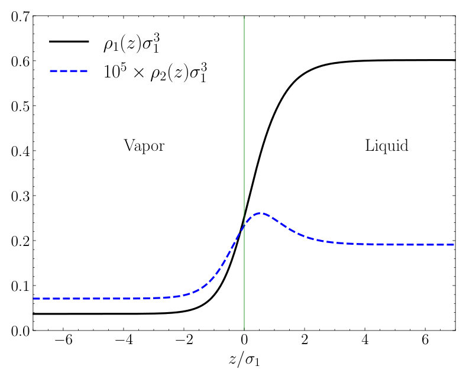
<figcaption class="paper-figure-caption"><b>Fig 1.</b> Figure 1: Liquid-vapor phase separation of the SW binary mixture with corresponding interface (green vertical line) located at z = 0 and density profiles of the first component (black solid) and the second component (dashed blue) which we magnified for visualization. The SW parameters of the second component are chosen to be βε2 = 0.6 and λ2 = 1.5 with σ2/σ1 = 1.</figcaption>
</figure>
<figure class="paper-figure-card">
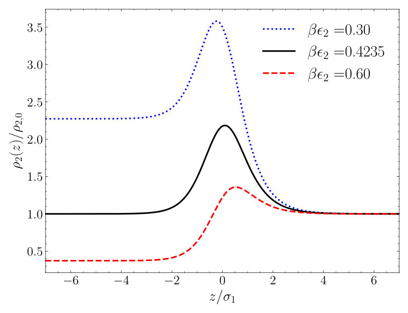
<figcaption class="paper-figure-caption"><b>Fig 2.</b> Figure 2: Normalized density profile ρ2(z)/ρ2,0 of the second component at the interface z = 0 for three energies ε2 with range λ2 = 1.5 and size ratio σ2/σ1 = 1. For reasons of clarity we do not show the density profile of the solvent. The lowest value of ε2 corresponds to the case of (slightly) solvophobic nano particles, that prefer the vapor phase, while the highest value of ε2 corresponds to case of (slightly) solvophilic nano particles, which prefer the liquid phase. In the case in between neither the liquid nor the vapor phase is prefered by the nano particles.</figcaption>
</figure>
<figure class="paper-figure-card">
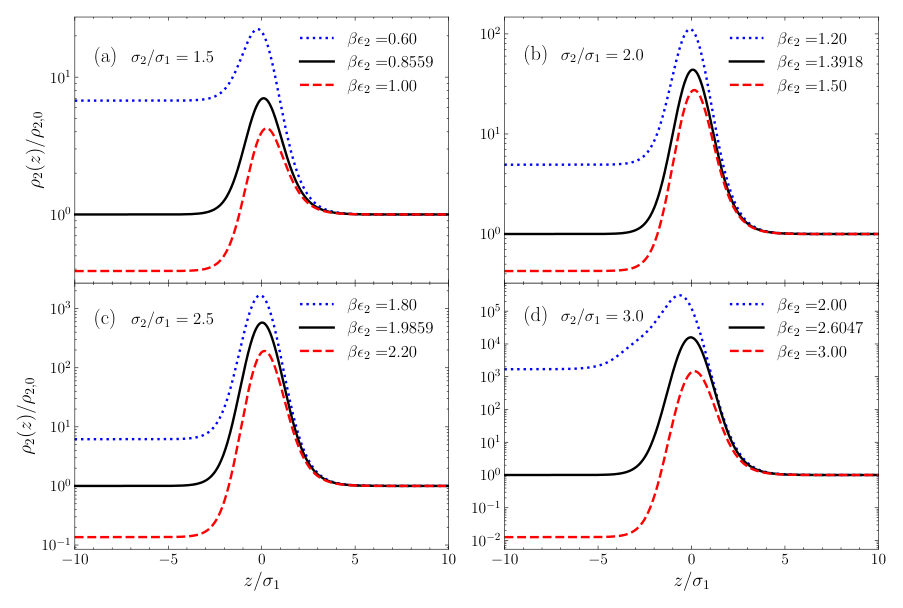
<figcaption class="paper-figure-caption"><b>Fig 3.</b> Figure 3: Normalized density profiles ρ2(z)/ρ2,0 for several size ratios σ2/σ1 = 1.5, 2.0, 2.5, 3.0 and energies ε2 slightly below (dotted blue) and above (dashed red) the sym- metric solutions (solid black). By increasing the size ratio the adsorption at the interface be- comes stronger and enhances the density by several orders of magnitude. Note the logarithmic scaling of the ordinates.</figcaption>
</figure>
<figure class="paper-figure-card">
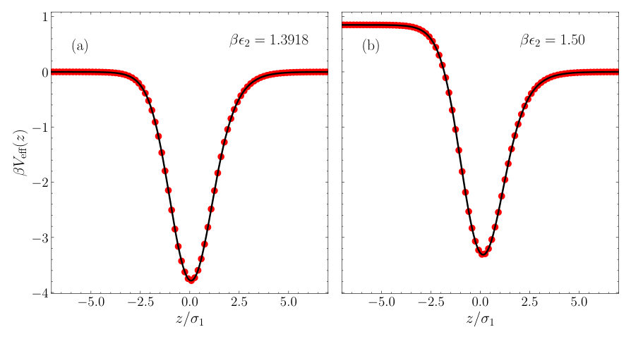
<figcaption class="paper-figure-caption"><b>Fig 4.</b> Figure 4: Effective potential Veff(z) near the interface at z = 0 once obtained via Eq.(35) (red dots) and Eq.(36) (solid black) of the asymmetric mixture σ2/σ1 = 2 evaluated for the symmet- ric case βε2 = 1.3918 (a) and the case βε2 = 1.50 (b) where the nano particles prefer the liquid. The agreement between both routes is very good.</figcaption>
</figure>
</div>

<p><strong>Summary.</strong> This paper uses Density Functional Theory to model a binary mixture near a liquid-vapor interface. It calculates the effective interaction potential acting on dissolved nanoparticles, demonstrating strong attraction to the interface using two consistent theoretical approaches. The work advances understanding of interfacial thermodynamics in soft matter systems.</p>
<p><strong>Why it may be interesting.</strong> While focused on classical fluids, the rigorous application of advanced statistical mechanics tools like FMT and the Widom theorem to inhomogeneous systems provides methodological insights applicable to quantum many-body problems involving interfaces or confinement.</p>
<details>
<summary>Detailed structure</summary>
<p><strong>Main problem.</strong> The study investigates the effective one-body interaction experienced by a dilute component (nano particles) due to the presence of a liquid-vapor interface formed by the solvent.</p>
<p><strong>Main result.</strong> The calculated effective interaction strongly attracts nano particles to the liquid-vapor interface, and this result is confirmed using two independent theoretical routes.</p>
<p><strong>Method.</strong> Classical Density Functional Theory (cDFT) is employed, utilizing novel perturbation theory contributions inspired by Fundamental Measure Theory (FMT).</p>
<p><strong>Model / system.</strong> The system modeled is an additive binary square-well mixture containing a solvent undergoing phase separation and dissolved nano particles. The analysis focuses on the density profiles near the planar free interface.</p>
<p><strong>Key observables.</strong> Effective one-body interaction potential ($V_{	ext{eff}}(z)$), density profiles ($
ho_1(z)$, $
ho_2(z)$), and interfacial surface tension ($\gamma_{s21}$).</p>
<p><strong>Important parameters / regimes.</strong> Dilute limit of nano particle concentration ($
ho_{    ext{nano}}  o 0$), solvent-particle interaction strength ($eta\epsilon_2$).</p>
<p><strong>Assumptions / limitations.</strong> The analysis relies on the square-well potential model and assumes the neglect of two- and higher order terms in certain theoretical mappings.</p>
<p><strong>Figures summary.</strong> Figure 4 illustrates the excellent agreement between the effective potential calculated via density profiles versus that derived from Widom's insertion theorem for different interaction strengths.</p>
<p><strong>Paper structure.</strong> The paper introduces DFT for the model system, discusses bulk considerations and phase equilibrium, and then details the calculation of the effective interaction using both direct profile analysis and the Widom insertion theorem.</p>
</details>
<details>
<summary>Abstract</summary>
<p>In this study we investigate the behavior of additive binary square-well mixtures within the framework of classical density functional theory. By leveraging on the geometrical structure of the square-well interaction, we propose a novel form of the perturbation theory contribution to the density functional in terms of weighted densities, inspired by fundamental measure theory. We apply this functional in order to study the effective one-body interaction due to the liquid-vapor interface of the solvent acting on a dilute component of dissolved nano particles. The effective one-body interaction attracts the nano particles strongly to the interface. We show that this effective interaction potential can be calculated either from the density profiles of the full mixture, at low but non-vanishing concentrations of the nano particles, or by employing the Widom insertion theorem in the dilute limit of vanishing density of nano particles. Both routes display excellent agreement.</p>
</details>
<p><sub><a href="#top">↑ back to top</a></sub></p>

<p><a id="paper-2608.08051"></a></p>
<h3 id="quantum-decision-theory-for-displacement-detection-with-finite-energy-gkp-states"><a href="http://arxiv.org/abs/2608.08051v1">Quantum Decision Theory for Displacement Detection with Finite-Energy GKP States</a></h3>
<p><strong>Authors:</strong> Seid Koudia, Symeon Chatzinotas<br>
<strong>Type:</strong> theory · <strong>Category:</strong> quantum information and computing · <strong>PDF:</strong> <a href="https://arxiv.org/pdf/2608.08051v1">https://arxiv.org/pdf/2608.08051v1</a><br>
<strong>Analysis basis:</strong> full PDF text, analyzed in chunks
<strong>Topic relevance:</strong> <code>quantum measurements</code> <strong>3/5</strong> · <code>Keldysh / 2PI / non-Gaussian methods</code> <strong>1/5</strong> · <code>correlated / nonlocal dissipation</code> <strong>1/5</strong></p>
<div class="figure-strip-hint">↔ Scroll figures horizontally</div>
<div class="paper-figures-scroll">
<figure class="paper-figure-card">
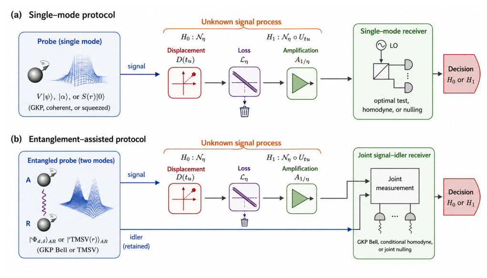
<figcaption class="paper-figure-caption"><b>Fig 1.</b> FIG. 1. Binary displacement-discrimination schemes. (a) Single-mode protocol with a receiver acting only on the signal mode. (b) Entanglement-assisted protocol in which the signal traverses the unknown process, the idler is retained locally, and both modes are measured jointly.</figcaption>
</figure>
<figure class="paper-figure-card">
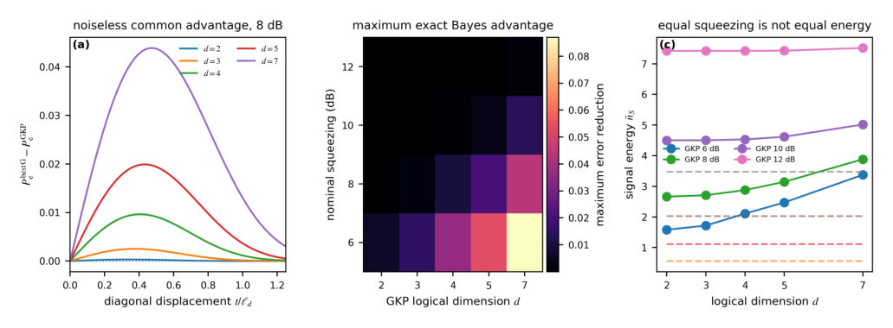
<figcaption class="paper-figure-caption"><b>Fig 2.</b> FIG. 2. Exact noiseless equal-squeezing comparison. (a) Common Bayesian advantage ∆pure B at 8 dB for d = 2, 3, 4, 5, 7 along the diagonal phase-space direction. Positive values mean that the finite-energy GKP Bell probe outperforms the coherent, aligned squeezed-vacuum, and twin-beam probes simultaneously. (b) Maximum advantage over 0 ≤t/ℓd ≤1.25 as a function of logical dimension and nominal squeezing. (c) Code-averaged GKP signal energy (solid curves) and Gaussian signal energy sinh2 r at the same nominal squeezing (dashed horizontal curves). The comparison is performed at equal squeezing, not equal energy.</figcaption>
</figure>
<figure class="paper-figure-card">
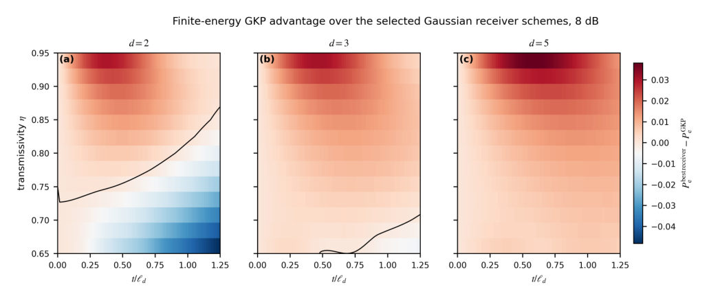
<figcaption class="paper-figure-caption"><b>Fig 3.</b> FIG. 3. Finite-energy Bayesian comparison after loss and post-amplification at 8 dB. The color represents ∆rec B from Eq. (64); red denotes a lower GKP Helstrom error than every selected Gaussian receiver, blue denotes the opposite, and the black curves mark equality. The Gaussian receiver set comprises coherent- and squeezed-state homodyne detection, twin-beam conditional homodyne detection, and the three inverse-preparation vacuum-or-not receivers.</figcaption>
</figure>
<figure class="paper-figure-card">
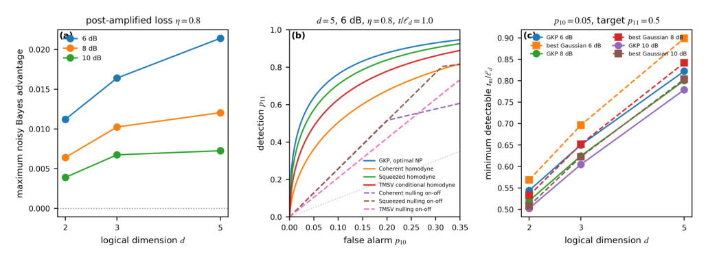
<figcaption class="paper-figure-caption"><b>Fig 4.</b> FIG. 4. Selected-receiver Bayesian and Neyman–Pearson comparison. (a) Maximum noisy Bayesian advantage at η = 0.8 versus logical dimension for 6, 8, and 10 dB. (b) Complete ROC at d = 5, 6 dB, η = 0.8, and t/ℓ5 = 1. Solid curves show the optimal GKP test and the Gaussian quadrature receivers; dashed curves show the inverse-preparation vacuum-or-not receivers. (c) First-crossing minimum detectable displacement at p10 = 0.05 and target p11 = 1/2. The Gaussian benchmark is the best of the six displayed receiver schemes at each squeezing.</figcaption>
</figure>
<figure class="paper-figure-card">
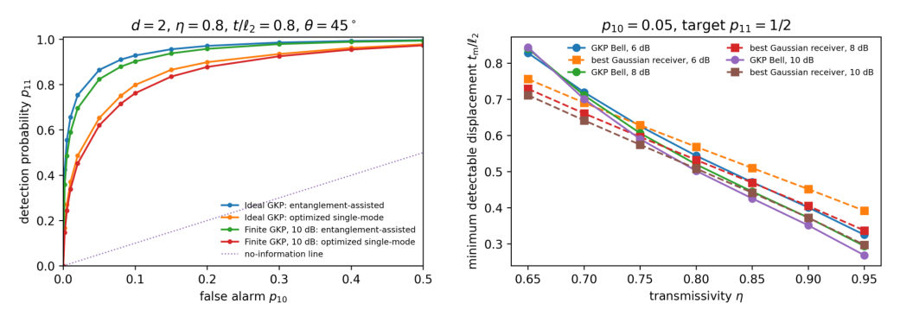
<figcaption class="paper-figure-caption"><b>Fig 5.</b> FIG. 5. Finite-energy Neyman–Pearson performance under post-amplified loss. (a) Receiver-operating characteristics for an oblique displacement with d = 2, η = 0.8, and t/ℓ2 = 0.8, comparing the ideal GKP limit with the finite-energy entanglement- assisted and optimized single-mode GKP protocols. Finite squeezing degrades the discrimination relative to the ideal-code limit while preserving the separation between the two protocols. (b) First-crossing minimum detectable displacement as a function of channel transmissivity for the finite-energy entanglement-assisted GKP protocol at equal nominal squeezing. The false-alarm probability is p10 = 0.05 and the target detection probability is p11 =...</figcaption>
</figure>
</div>

<p><strong>Summary.</strong> This paper establishes a rigorous decision-theoretic framework to detect phase-space displacements using finite-energy GKP states. It derives optimal detection metrics by comparing GKP performance against standard Gaussian probes under realistic loss and amplification noise channels. The key finding is that GKP encoding offers superior sensing capabilities in specific noisy regimes compared to purely Gaussian approaches.</p>
<p><strong>Why it may be interesting.</strong> This work directly addresses quantum metrology limits by analyzing non-Gaussian probes (GKP states) in realistic noisy environments (lossy channels), which is crucial for practical quantum sensing applications beyond the ideal vacuum case.</p>
<details>
<summary>Detailed structure</summary>
<p><strong>Main problem.</strong> The paper develops a quantum-decision-theoretic framework to determine if an unknown phase-space displacement has occurred using finite-energy Gottesman-Kitaev-Preskill (GKP) probes.</p>
<p><strong>Main result.</strong> Under lossy and finite-squeezing regimes, GKP probes can achieve lower Bayesian error probabilities and detect smaller displacements compared to optimized Gaussian receivers.</p>
<p><strong>Method.</strong> The authors employ quantum decision theory metrics (Bayesian minimum-error probability and Neyman-Pearson ROC) applied to bosonic systems undergoing displacement channels.</p>
<p><strong>Model / system.</strong> The system models a single bosonic mode subjected to unknown phase-space displacements, analyzed using finite-energy GKP states as probes. The analysis incorporates realistic noise channels like pure loss followed by quantum-limited amplification.</p>
<p><strong>Key observables.</strong> Bayesian error probability ($P_e^\star$), Neyman-Pearson receiver operating characteristic ($p_{11}(p_{10})$), and the minimum detectable displacement.</p>
<p><strong>Important parameters / regimes.</strong> Finite squeezing level, logical dimension ($d$), channel transmissivity ($\eta$), and amplification gain ($G$).</p>
<p><strong>Assumptions / limitations.</strong> The analysis treats pure loss followed by quantum-limited amplification as an effective Gaussian random-displacement channel; entanglement does not surpass the single-mode optimum in noiseless pure states.</p>
<p><strong>Figures summary.</strong> Figure 5 compares ROC curves and minimum detectable displacement thresholds for GKP vs. Gaussian protocols under varying transmissivity, showing performance advantages for GKP in specific regimes.</p>
<p><strong>Paper structure.</strong> The paper establishes the decision theory framework, derives optimal metrics using characteristic functions, models loss/amplification channels, analyzes single-mode versus entanglement-assisted GKP sensing, and concludes with numerical comparisons against Gaussian benchmarks.</p>
</details>
<details>
<summary>Abstract</summary>
<p>We develop a quantum-decision-theoretic framework for detecting phase-space displacements with finite-energy, $d$-level Gottesman-Kitaev-Preskill (GKP) probes. For single-mode and entanglement-assisted architectures, we derive the Bayesian minimum-error probability, the optimal Neyman-Pearson receiver-operating characteristic, and the corresponding minimum detectable displacement. Finite-energy effects are treated through exact theta-series displacement kernels, while pure loss followed by quantum-limited amplification is mapped to an effective Gaussian random-displacement channel. Entanglement removes preparation-dependent blind directions and preserves both logical displacement labels, although it does not surpass the pointwise optimized single-mode strategy in the noiseless pure-state setting. We benchmark the resulting protocols against coherent-state, direction-matched squeezed-vacuum, and twin-beam schemes at equal nominal squeezing. Numerical results identify finite-squeezing and lossy regimes in which GKP probes achieve both a lower Bayesian error and a smaller minimum detectable perturbation than the selected Gaussian receivers.</p>
</details>
<p><sub><a href="#top">↑ back to top</a></sub></p>

<p><a id="paper-2608.09262"></a></p>
<h3 id="quantum-uncertainty-in-a-macroscopic-domain"><a href="http://arxiv.org/abs/2608.09262v1">Quantum uncertainty in a macroscopic domain</a></h3>
<p><strong>Authors:</strong> Othman Q. Malhas, Bacim Alali<br>
<strong>Type:</strong> theory · <strong>Category:</strong> other · <strong>PDF:</strong> <a href="https://arxiv.org/pdf/2608.09262v1">https://arxiv.org/pdf/2608.09262v1</a><br>
<strong>Analysis basis:</strong> full PDF text, analyzed in chunks
<strong>Topic relevance:</strong> <code>quantum measurements</code> <strong>3/5</strong> · <code>analog quantum simulation</code> <strong>1/5</strong> · <code>correlated / nonlocal dissipation</code> <strong>1/5</strong></p>
<div class="figure-strip-hint">↔ Scroll figures horizontally</div>
<div class="paper-figures-scroll">
<figure class="paper-figure-card">
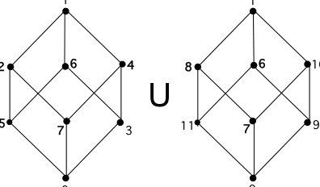
<figcaption class="paper-figure-caption"><b>Fig 1.</b> Figure 1: The Hasse diagram V12, shown on the left, is an orthocomplemented lattice obtained by gluing the Boolean algebras B1 and B2 along their common Boolean subalgebra {0, 1, 6, 7}. With the component family specified in (3), it is also a partial Boolean algebra.</figcaption>
</figure>
<figure class="paper-figure-card">
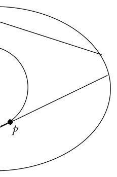
<figcaption class="paper-figure-caption"><b>Fig 2.</b> Figure 3: A schematic representation of models and pre-frames. The set U of initial formulæ is depicted as a disc, the chords represent pre-frames, and the solid discs represent models. A model meets each pre-frame in at most one point, i.e. in at most one initial formula (Lemma 10.4).</figcaption>
</figure>
<figure class="paper-figure-card">
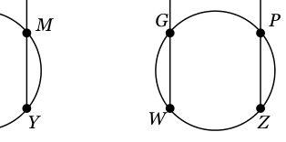
<figcaption class="paper-figure-caption"><b>Fig 3.</b> Figure 5: The configuration Σ, a 3 × 3 array of modules mij.</figcaption>
</figure>
</div>

<p><strong>Summary.</strong> This work develops a model-theoretic framework using partial Boolean algebras to mathematically encode concepts of quantum uncertainty. By analyzing the structure of these algebras, the authors show how classical logical consistency can yield analogues of measurement back-action and contextuality. It provides an abstract structural understanding of quantum constraints rooted in propositional logic.</p>
<p><strong>Why it may be interesting.</strong> It offers a highly abstract, logic-based approach to contextuality and quantum constraints, which could provide novel mathematical tools for understanding non-classical correlations without invoking Hilbert space formalism directly.</p>
<details>
<summary>Detailed structure</summary>
<p><strong>Main problem.</strong> The paper aims to formulate quantum-like uncertainty using purely classical model-theoretic tools, specifically by representing partial Boolean algebras.</p>
<p><strong>Main result.</strong> It establishes that certain structural properties (KS-colourability) of these abstract algebras correspond to physical constraints like the destruction of sharpness upon measurement back-action.</p>
<p><strong>Method.</strong> The authors develop a framework mapping propositional logic theories onto partial Boolean algebras, using model theory to define concepts analogous to quantum compatibility and uncertainty.</p>
<p><strong>Model / system.</strong> The system is an abstract mathematical model based on partial Boolean algebras derived from the core of consistent theories in classical propositional logic. These structures are then mapped analogously to propositions associated with physical observables.</p>
<p><strong>Key observables.</strong> KS-colourability, sharpness (number of locally admissible atomic outcomes), and the structure of the underlying partial Boolean algebra.</p>
<p><strong>Important parameters / regimes.</strong> The dimension of the partial Boolean algebra (e.g., 12-vertex vs. 140-vertex) dictates whether certain structural properties hold.</p>
<p><strong>Assumptions / limitations.</strong> The framework assumes that quantum uncertainty can be captured by analyzing the organization and compatibility structure of propositions within a classical logical setting, rather than requiring nonclassical deduction itself.</p>
<p><strong>Figures summary.</strong> Figures illustrate the Hasse diagram of small partial Boolean algebras (like $V_{12}$) formed by gluing together smaller Boolean components.</p>
<p><strong>Paper structure.</strong> The paper progresses from defining the model-theoretic representation of partial Boolean algebras, to characterizing uncertainty via KS-colourability and measurement back-action in finite examples, concluding with connections to state support sets and limitations regarding probability assignment.</p>
</details>
<details>
<summary>Abstract</summary>
<p>We develop a classical model-theoretic representation of partial Boolean algebras and use it to formulate quantum-like uncertainty without abandoning classical propositional logic. Given a surjection from the initial formulæ of a propositional language onto a partial Boolean algebra $(\mathcal V,Π)$, we construct a consistent theory $\mathcal T_g$ whose core---the ordered set of equivalence classes of initial formulæ---is isomorphic to $(\mathcal V,Π)$. Its models are characterized as upward-closed clusters, yielding a model-theoretic formulation of KS-colourability: an $n$-dimensional partial Boolean algebra is KS-colourable exactly when the induced theory has a model meeting every pre-frame in one primitive formula.   For finite-spectrum observables, uncertainty is defined by the number of locally admissible atomic outcomes. Dispersion-free models are characterized by the singleton pre-frame condition. With an additional measurement-update postulate, a finite example shows how measurement of an incompatible observable can destroy sharpness, providing a model-theoretic form of back-action. A $12$-vertex partial Boolean algebra is KS-colourable, whereas a rigorously constructed $140$-vertex, four-dimensional partial Boolean algebra is not, as shown by a parity argument; its incidence structure is isomorphic to the Peres $24$-ray, $24$-basis configuration in $\mathbb R^4$. Macroscopic interpretations show that these phenomena arise from the organization of propositions and models rather than from nonclassical deduction. Finally, we relate certain models to the probability-one propositions of pure states and density operators, while emphasizing that such certainty models do not determine the full quantum state.</p>
</details>
<p><sub><a href="#top">↑ back to top</a></sub></p>

<p><a id="paper-2608.07868"></a></p>
<h3 id="sub-rayleigh-imaging-of-unequal-intensity-sources-near-quantum-limit-multiparameter-estimation"><a href="http://arxiv.org/abs/2608.07868v1">Sub-Rayleigh Imaging of Unequal-Intensity Sources: Near-Quantum-Limit Multiparameter Estimation</a></h3>
<p><strong>Authors:</strong> Y. Batuhan Yilmaz, Kent A. G. Bonsma-Fisher, Muhammad Mohid, Noah Lupu-Gladstein, Arthur O. T. Pang, Aephraim M. Steinberg<br>
<strong>Type:</strong> both · <strong>Category:</strong> other · <strong>PDF:</strong> <a href="https://arxiv.org/pdf/2608.07868v1">https://arxiv.org/pdf/2608.07868v1</a><br>
<strong>Analysis basis:</strong> full PDF text, analyzed in chunks
<strong>Topic relevance:</strong> <code>quantum measurements</code> <strong>3/5</strong> · <code>interference shaping light</code> <strong>1/5</strong> · <code>quantum optics experiment</code> <strong>1/5</strong></p>
<div class="figure-strip-hint">↔ Scroll figures horizontally</div>
<div class="paper-figures-scroll">
<figure class="paper-figure-card">
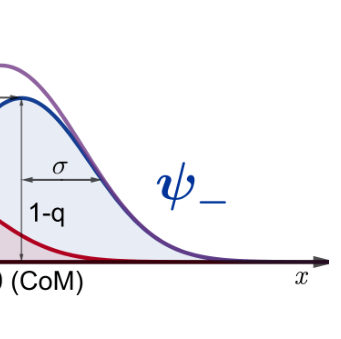
<figcaption class="paper-figure-caption"><b>Fig 1.</b> Fig. 1. Illustration of the PSF of the two sources with separation 𝛿and relative intensity 𝑞in the image plane (red and blue) and the PSF of the two sources combined (purple). The axis is centered on the combined PSF’s center of mass (CoM).</figcaption>
</figure>
<figure class="paper-figure-card">
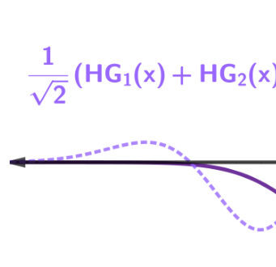
<figcaption class="paper-figure-caption"><b>Fig 2.</b> Fig. 2. Illustrations and the comparison of the ideal (HG1(𝑥) + HG2(𝑥))/ √</figcaption>
</figure>
<figure class="paper-figure-card">
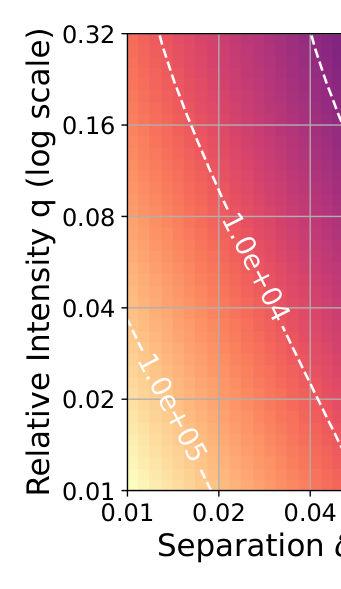
<figcaption class="paper-figure-caption"><b>Fig 3.</b> Fig. 3. Ratio of the CRBs for 𝛿with DI and SPLICE in a log-log contour plot. The advantage of SPLICE grows as 𝛿and 𝑞get smaller.</figcaption>
</figure>
<figure class="paper-figure-card">
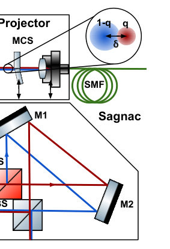
<figcaption class="paper-figure-caption"><b>Fig 4.</b> Fig. 4. The experimental setup. The spatial profile of the two sources is illustrated on the top right. The Sagnac configuration prepares the two beams with unequal intensities and the fiber collimator with microscope cover slips (MCS) applies the projectors 𝜙±(𝑥). We use the polarization degree of freedom of light to control the relative intensity. The quarter-wave plate (QWP) and half-wave plate (HWP) sets the polarization. The polarizing beamsplitter (PBS) at the beginning of the interferometer splits the horizontal and the vertical portions of the light, and the non-polarizing beamsplitter recombines the two beams. The distance between two beams is controlled by the mirror M1 mounted on...</figcaption>
</figure>
<figure class="paper-figure-card">
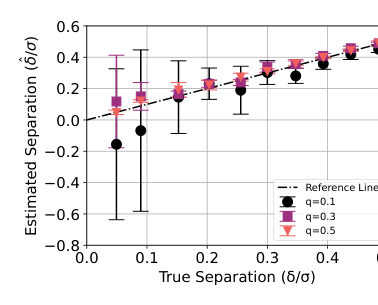
<figcaption class="paper-figure-caption"><b>Fig 5.</b> Fig. 5. Estimated values vs. the true values of the parameters. Different colors are the results for different relative intensities. The separation values are normalized by the width of the Gaussian PSF 𝜎= 397 µm. The reference lines show the true values of the parameters. Each point is the average of 10 trials. Each estimate uses on average 320,000 single photon detections. The error bars represent the standard deviation of the 10 trials of each setting.</figcaption>
</figure>
</div>

<p><strong>Summary.</strong> This paper presents a method called SPLICE to overcome diffraction limitations when measuring two closely spaced light sources with unequal intensities. By adapting super-resolution localization techniques and using quantum information theory bounds, the authors demonstrate that their approach significantly improves the accuracy of estimating both separation and intensity compared to standard direct imaging methods. This work advances the field by achieving near-quantum-limit precision in complex multiparameter optical estimation.</p>
<p><strong>Why it may be interesting.</strong> This work is highly relevant to quantum optics and open quantum systems as it pushes measurement techniques beyond classical limits by exploiting quantum correlations in parameter estimation, which has implications for sensing and imaging.</p>
<details>
<summary>Detailed structure</summary>
<p><strong>Main problem.</strong> The core problem is overcoming the diffraction limit (Rayleigh criterion) in optical imaging to simultaneously estimate both the separation ($\delta$) and relative intensity ($q$) of two spatially unresolved, unequal-intensity light sources.</p>
<p><strong>Main result.</strong> The proposed SPLICE method significantly outperforms Direct Imaging (DI), achieving an estimation precision that approaches the quantum limit with up to a sixfold improvement over DI in tested regimes.</p>
<p><strong>Method.</strong> The authors adapt Super-Resolved Position Localization by Inversion of Coherence along an Edge (SPLICE) technique, employing quantum parameter estimation theory based on Fisher Information matrices derived from measured photon counts.</p>
<p><strong>Model / system.</strong> The system involves two incoherent light sources whose combined field is imaged. The analysis models the state as a statistical mixture and uses projectors onto specific spatial modes (Hermite-Gauss functions) to extract information about $\delta$ and $q$.</p>
<p><strong>Key observables.</strong> Root Mean Squared Error (RMSE) for estimated separation ($\hat{\delta}$) and relative intensity ($\hat{q}$); Quantum Cramér-Rao Bound (QCRB).</p>
<p><strong>Important parameters / regimes.</strong> Separation ($\delta$), relative intensity ($q$), beam radius ($\sigma$), quantum limit bounds, and cross-talk parameter ($\epsilon$).</p>
<p><strong>Assumptions / limitations.</strong> The analysis assumes single-photon detection dominates, the center of mass is known, and theoretical bounds rely on asymptotic unbiasedness (large photon number).</p>
<p><strong>Figures summary.</strong> Figures compare estimated vs. true values for $\delta$ and $q$, showing SPLICE's superior performance relative to DI; one figure plots the ratio of CRBs demonstrating SPLICE's growing advantage as separation decreases.</p>
<p><strong>Paper structure.</strong> The paper establishes the limitations of classical imaging, introduces the theoretical framework using quantum Fisher Information matrices (CRB), details the adaptation of SPLICE for multiparameter estimation, and concludes with experimental validation showing performance approaching the quantum limit.</p>
</details>
<details>
<summary>Abstract</summary>
<p>In optical imaging, diffraction strongly degrades the performance of conventional intensity-based estimation once the separation between two sources is below the Rayleigh-Abbe limit. Recent developments showed that this limitation can be surpassed using spatial-mode demultiplexing (SPADE), and this was demonstrated in several experiments for two equal-intensity spots of unknown separation. When there are multiple unknown parameters, as in the case of several unequal sources with unknown intensities and unknown separation, cross-talk among the parameters makes the multi-parameter estimation problem significantly more challenging. In this paper, we adapt super-resolved position localization by inversion of coherence along an edge (SPLICE) to estimate both the separation and relative intensity of two incoherent sources simultaneously. We demonstrate a clear advantage over direct imaging (DI), achieving a root mean squared error (RMSE) approximately $50 \%$ larger than the quantum limit and a sixfold improvement over DI within the range of parameters we tested. This improvement can be even greater for smaller separations and larger intensity imbalances when crosstalk is suppressed.</p>
</details>
<p><sub><a href="#top">↑ back to top</a></sub></p>

<p><a id="paper-2608.08464"></a></p>
<h3 id="effect-of-strong-field-space-time-features-on-vacuum-pair"><a href="http://arxiv.org/abs/2608.08464v1">Effect of Strong Field Space-time Features on Vacuum Pair</a></h3>
<p><strong>Authors:</strong> B. An, N. S. Lin, C. K. Li, M. Jiang, Y. J. Li<br>
<strong>Type:</strong> theory · <strong>Category:</strong> other · <strong>PDF:</strong> <a href="https://arxiv.org/pdf/2608.08464v1">https://arxiv.org/pdf/2608.08464v1</a><br>
<strong>Analysis basis:</strong> full PDF text, analyzed in chunks
<strong>Topic relevance:</strong> <code>Keldysh / 2PI / non-Gaussian methods</code> <strong>3/5</strong> · <code>methods for driven-dissipative</code> <strong>1/5</strong></p>
<div class="figure-strip-hint">↔ Scroll figures horizontally</div>
<div class="paper-figures-scroll">
<figure class="paper-figure-card">
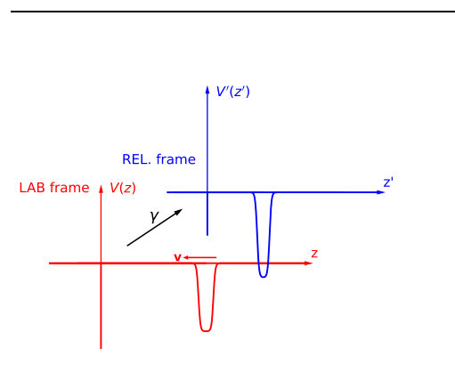
<figcaption class="paper-figure-caption"><b>Fig 1.</b> Fig. 1 Schematic picture of the relativistic moving potential well. The potential well moves at a constant velocity along positive direction of the z-axis in the laboratory frame.</figcaption>
</figure>
<figure class="paper-figure-card">
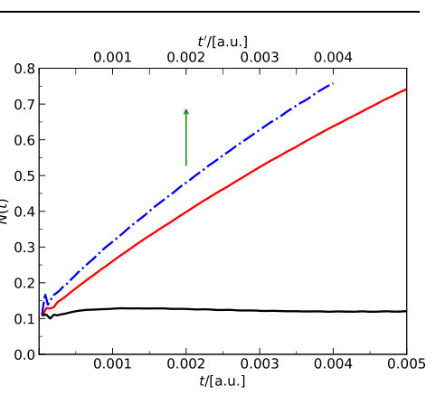
<figcaption class="paper-figure-caption"><b>Fig 2.</b> Fig. 2 Number of created pairs as a function of time. The black solid line represents a rest potential well in the labora- tory frame (V = 2.4c2, W = 1/c, D = 4/c, v0 = 0), the red solid line represents a relativistic moving potential well in the laboratory frame (V = 2.4c2, W = 1/c, D = 4/c, v0 = 0.6c). The blue dash-dot line represents a rest potential well in the relative frame (V ′ = 3c2, W ′ = 1.25/c, D′ = 5/c, t′ = 0.004, v ′ = 0).</figcaption>
</figure>
<figure class="paper-figure-card">
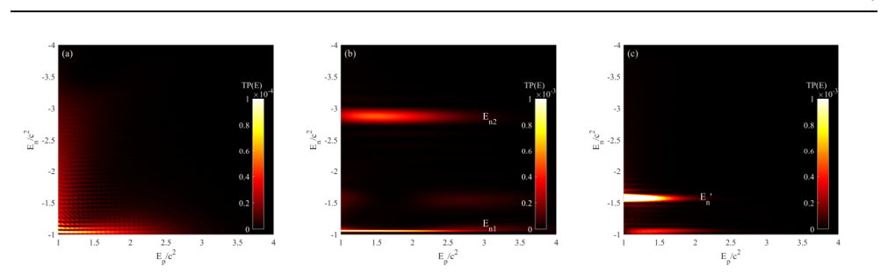
<figcaption class="paper-figure-caption"><b>Fig 3.</b> Fig. 3 The tunneling probability of electron. The colorbar represents the particle tunneling probability. (a) The rest potential well in the laboratory frame, (b) The relativistic moving potential well in the laboratory frame, (c) The rest potential well in the relative frame. Note that the colorbar scale in (a) is one order of magnitude lower than the others. The parameters are the same as those in Fig. 2.</figcaption>
</figure>
<figure class="paper-figure-card">
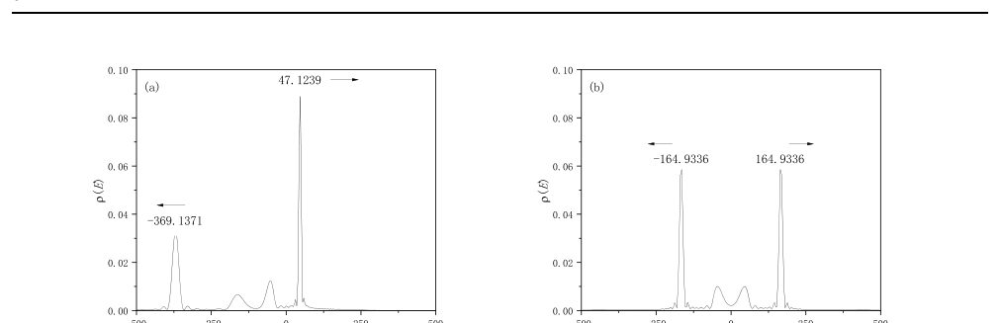
<figcaption class="paper-figure-caption"><b>Fig 4.</b> Fig. 4 The momentum spectra of the created positrons. (a) The relativistic moving potential well in the laboratory frame, (b) The rest potential well in the relative frame. Arrows indicate the propagation directions of positrons. The parameters are the same as those in Fig. 2.</figcaption>
</figure>
<figure class="paper-figure-card">
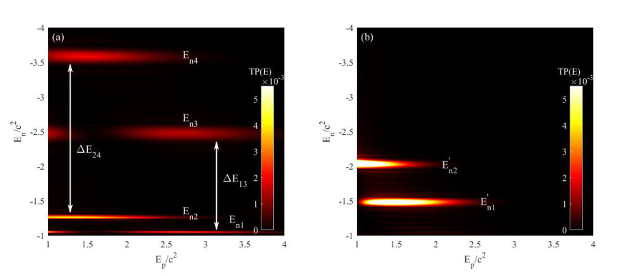
<figcaption class="paper-figure-caption"><b>Fig 5.</b> Fig. 5 The tunneling probability of electron. The colorbar represents the particle tunneling probability. (a) The relativistic moving potential well in the laboratory frame (V = 2.8c2, W = 0.7/c, D = 4/c, v0 = 0.55c, t = 0.005). (b) The rest potential well in the relative frame(V ′ = 3.35c2, W ′ = 0.84/c, D′ = 4.79/c, v ′ = 0, t′ = 0.0042).</figcaption>
</figure>
</div>

<p><strong>Summary.</strong> This paper uses Computational Quantum Field Theory (CQFT) to study electron-positron pair creation induced by strong, time-varying electromagnetic fields. The core finding is that the relativistic motion of the field source modifies vacuum physics, significantly lowering the required laser intensity threshold for pair production. By analyzing frame dependence via Lorentz transformations, the authors establish a comprehensive framework linking spacetime geometry directly to quantum vacuum decay.</p>
<p><strong>Why it may be interesting.</strong> This work is highly relevant as it applies advanced quantum field theory techniques to understand non-perturbative QED phenomena. The explicit focus on relativistic kinematics and frame dependence provides a deep insight into how spacetime geometry influences fundamental vacuum processes, which has parallels in analyzing extreme astrophysical environments or high-energy particle collisions.</p>
<details>
<summary>Detailed structure</summary>
<p><strong>Main problem.</strong> The study investigates how strong, time-dependent space-time features affect the vacuum pair production rate of electron-positron pairs.</p>
<p><strong>Main result.</strong> The spatiotemporal modulation provided by a relativistically moving potential well significantly reduces the laser intensity threshold required for pair creation. This reduction is fundamentally linked to the Lorentz transformation of four-momentum, reshaping vacuum excitation pathways in phase space.</p>
<p><strong>Method.</strong> The research employs Computational Quantum Field Theory (CQFT) alongside semi-analytical methods like the Instantaneous Resonance Field Method (IRFM). These techniques are used to solve the time-dependent Dirac equation for pair production probabilities.</p>
<p><strong>Model / system.</strong> The system models electron-positron pair creation in a strong external field, specifically using a potential well $V(z, t)$ that moves relativistically. The dynamics are governed by the Dirac equation, and comparisons are made between results obtained in the laboratory frame and a moving reference frame via Lorentz transformations.</p>
<p><strong>Key observables.</strong> Total number of created pairs ($N_{e}, N_{p}$), tunneling probability ($\langle E_p | 	ext{En} 
angle^2$), momentum spectra of positrons ($P_z$), and the energy Full Width at Half Maximum (FWHM) of bound states.</p>
<p><strong>Important parameters / regimes.</strong> Laser intensity, relative velocity ($v_0$), Lorentz factor ($\gamma$), and characteristic potential parameters ($V_0, D, W$).</p>
<p><strong>Assumptions / limitations.</strong> The analysis assumes that the observed pair creation enhancement is due to relativistic phase-space reconfiguration governed by Lorentz transformations, rather than just increased field strength.</p>
<p><strong>Figures summary.</strong> Figures illustrate the time evolution of pair numbers for rest vs. relativistic motion in both frames; they also show momentum spectra and tunneling probabilities derived from bound state analysis across different reference frames.</p>
<p><strong>Paper structure.</strong> The paper progresses by first establishing the CQFT framework to model pair creation in a moving potential well. It then compares results between the Lab frame and the Relativistic frame using Lorentz transformations, analyzing how bound state properties (energies, FWHM) transform, culminating in the conclusion about threshold reduction.</p>
</details>
<details>
<summary>Abstract</summary>
<p>The relativistic dynamics of bound states across inertial reference frames are investigated using the computational quantum field theory (CQFT). The results reveal that the spatiotemporal properties of bound states within a given potential well are strictly frame-dependent. Crucially, this spatiotemporal modulation of the external field enables a reduction in the laser intensity threshold required for vacuum electron-positron pair creation. Analytical and numerical calculations demonstrate that this threshold reduction originates from the Lorentz transformation of the four-momentum, which reshapes the vacuum excitation pathways in phase space. By developing CQFT, we establish a comprehensive framework in which relativistic effects intrinsically govern the quantum vacuum decay process</p>
</details>
<p><sub><a href="#top">↑ back to top</a></sub></p>

<p><a id="paper-2608.08843"></a></p>
<h3 id="layer-locked-chiral-topological-superconductivity"><a href="http://arxiv.org/abs/2608.08843v1">Layer-Locked Chiral Topological Superconductivity</a></h3>
<p><strong>Authors:</strong> Yijie Mo, Zhongbo Yan<br>
<strong>Type:</strong> theory · <strong>Category:</strong> other · <strong>PDF:</strong> <a href="https://arxiv.org/pdf/2608.08843v1">https://arxiv.org/pdf/2608.08843v1</a><br>
<strong>Analysis basis:</strong> full PDF text, analyzed in chunks
<strong>Topic relevance:</strong> <code>analog quantum simulation</code> <strong>3/5</strong> · <code>Keldysh / 2PI / non-Gaussian methods</code> <strong>1/5</strong></p>
<div class="figure-strip-hint">↔ Scroll figures horizontally</div>
<div class="paper-figures-scroll">
<figure class="paper-figure-card">
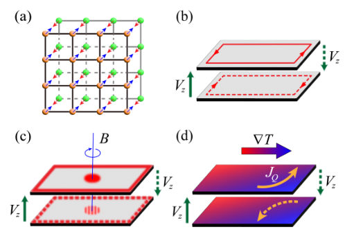
<figcaption class="paper-figure-caption"><b>Fig 1.</b> FIG. 1. Schematics of the (a) lattice structure and antiferromagnetic order, (b) layer-locked CMESs, (c) layer-locked vortex-core MZMs, and (d) layer-locked thermal Hall effect. In (b)–(d), the dashed pat- terns indicate a switch of the locking layer upon reversal of the gate voltage.</figcaption>
</figure>
<figure class="paper-figure-card">
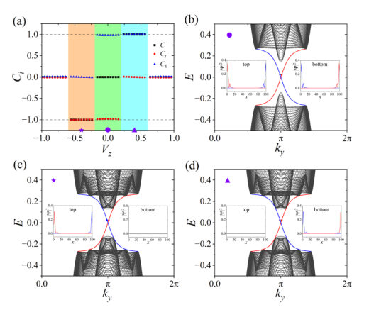
<figcaption class="paper-figure-caption"><b>Fig 2.</b> FIG. 2. (a) Total Chern number (C) and layer-resolved Chern num- bers (Ct, Cb) as a function of Vz. The white, yellow, green, and cyan regions correspond to the trivial, top-layer-locking, bilayer-locking, and bottom-layer-locking phases, respectively. (b)-(d) Energy spec- tra for a ribbon geometry with open (periodic) boundary conditions in the x(y) direction, for Vz = 0, −0.4, and 0.4, respectively. The midgap edge-state spectrum is doubly degenerate in (b), whereas no such degeneracy appears in (c) or (d). Insets show the layer-resolved probability density profiles of the upper-moving (red) and lower- moving (blue) CMESs on the two x-normal edges (with Nx = 100). Common parameters are t...</figcaption>
</figure>
<figure class="paper-figure-card">
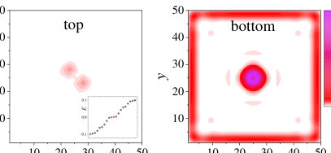
<figcaption class="paper-figure-caption"><b>Fig 3.</b> FIG. 3. Layer-resolved probability density profiles of MZMs un- der open boundary conditions in both the x and y directions (Nx = Ny = 50), with a single vortex placed at (x, y) = (25, 25). Panels (a)–(c) correspond to Vz = 0, −0.4, and 0.4, respectively. Insets show a few eigenenergies closest to E = 0. Common parameters are t = 1, µ = 3.8, η = 0.5, λso = 0.5, Mz = 0.5, ∆= 0.3, and ξ = 2.</figcaption>
</figure>
<figure class="paper-figure-card">
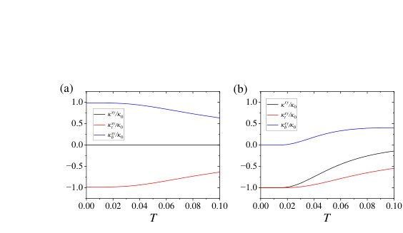
<figcaption class="paper-figure-caption"><b>Fig 4.</b> FIG. 4. Layer-resolved thermal Hall coefficients as functions of tem- perature. The solid black, red, and blue lines represent the total, top-layer, and bottom-layer thermal Hall coefficients, respectively. Panels (a) and (b) correspond to Vz = 0 and −0.4, respectively. Common parameters are: t = 1, µ = 3.8, η = 0.5, λso = 0.5, Mz = 0.5, and ∆= 0.3.</figcaption>
</figure>
</div>

<p><strong>Summary.</strong> The paper proposes a universal mechanism to realize layer-locked chiral topological superconductivity in bilayer antiferromagnets. By tuning an external gate voltage, the system can be driven into three distinct topological phases, each characterized by unique layer-resolved Chern numbers. These theoretical predictions are strongly correlated with observable signatures like confined Majorana edge states and quantized thermal Hall responses.</p>
<p><strong>Why it may be interesting.</strong> This work provides a concrete, tunable platform for realizing exotic topological superconductivity using engineered symmetries in layered materials, which is highly relevant to understanding emergent quantum phenomena in condensed matter systems.</p>
<details>
<summary>Detailed structure</summary>
<p><strong>Main problem.</strong> The research aims to uncover a universal mechanism for realizing layer-locked topological phases, specifically focusing on chiral topological superconductivity (CTSC) in bilayer antiferromagnetic systems.</p>
<p><strong>Main result.</strong> Three distinct, gate-tunable topological superconducting phases were identified, characterized by unique layer-resolved Chern numbers ($C_t, C_b$) and corresponding physical signatures like edge states and thermal Hall responses.</p>
<p><strong>Method.</strong> The study uses the Bogoliubov-de Gennes (BdG) Hamiltonian to model the system and characterizes topology using layer-resolved Chern numbers calculated from the Berry curvature.</p>
<p><strong>Model / system.</strong> A minimal bilayer antiferromagnetic system with s-wave pairing is modeled, featuring nonsymmorphic symmetries that enforce specific hopping vanishing conditions. The Hamiltonian includes terms for hopping, spin-orbit coupling, magnetic fields, and superconducting pairing ($\Delta$).</p>
<p><strong>Key observables.</strong> Layer-resolved Chern numbers ($C_t, C_b$), layer-locked chiral Majorana edge states (CMESs), vortex-core Majorana zero modes (MZMs), and the thermal Hall response ($\kappa_{xy}^z$).</p>
<p><strong>Important parameters / regimes.</strong> Gate voltage tuning of the staggered potential ($V_z$) is crucial for transitioning between the three distinct topological phases.</p>
<p><strong>Assumptions / limitations.</strong> The layer-resolved Chern number is noted not to be a genuine topological invariant, and the model relies on specific symmetry constraints (nonsymmorphic symmetries).</p>
<p><strong>Figures summary.</strong> Figures illustrate the dependence of $C, C_t, C_b$ on $V_z$, show layer-resolved probability density profiles for MZMs under vortices in different locking phases, and confirm the quantization of the thermal Hall coefficient ($\kappa_{xy}^z = C\kappa_0$).</p>
<p><strong>Paper structure.</strong> The paper establishes the theoretical framework using the BdG Hamiltonian, derives the mechanism based on symmetry constraints, identifies three distinct topological superconducting regimes by tuning $V_z$, and validates these findings through multiple measurable physical diagnostics (edge states, vortices, thermal response).</p>
</details>
<details>
<summary>Abstract</summary>
<p>We uncover a universal mechanism for realizing layer-locked topological phases. Guided by it, we investigate the realization of layer-locked chiral topological superconductivity-the superconducting analogue of the quantum anomalous layer Hall effect-in a nonsymmorphic bilayer antiferromagnetic system with s-wave pairing. We identify three distinct gate-tunable topological phases and establish a direct correspondence between the nearly quantized layer-resolved Chern numbers and the layer-locking behavior of chiral Majorana edge states, vortex-core Majorana zero modes, and nearly quantized thermal Hall responses.</p>
</details>
<p><sub><a href="#top">↑ back to top</a></sub></p>

<p><a id="paper-2608.08745"></a></p>
<h3 id="promise-and-challenges-of-distimation"><a href="http://arxiv.org/abs/2608.08745v1">Promise and Challenges of Distimation</a></h3>
<p><strong>Authors:</strong> Joshua Carlo A. Casapao, Ananda G. Maity, Naphan Benchasattabuse, Michal Hajdušek, Akihito Soeda, Rodney Van Meter, David Elkouss<br>
<strong>Type:</strong> theory · <strong>Category:</strong> quantum information and computing · <strong>PDF:</strong> <a href="https://arxiv.org/pdf/2608.08745v1">https://arxiv.org/pdf/2608.08745v1</a><br>
<strong>Analysis basis:</strong> full PDF text, analyzed in chunks
<strong>Topic relevance:</strong> <code>quantum measurements</code> <strong>3/5</strong> · <code>methods for driven-dissipative</code> <strong>1/5</strong></p>
<div class="figure-strip-hint">↔ Scroll figures horizontally</div>
<div class="paper-figures-scroll">
<figure class="paper-figure-card">
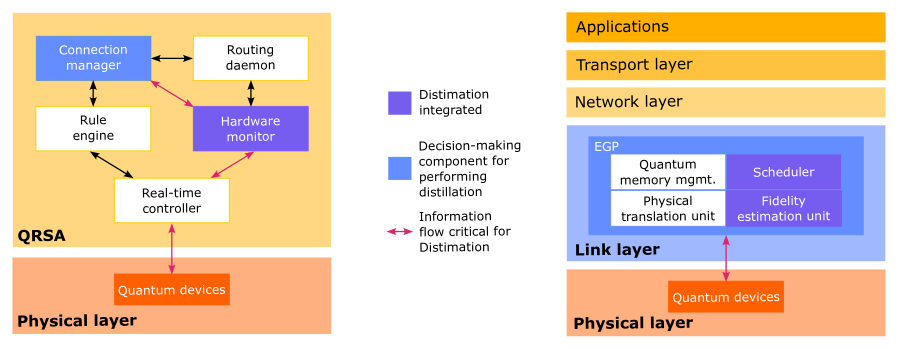
<figcaption class="paper-figure-caption"><b>Fig 1.</b> Fig. 1. Incorporating distimation within the quantum network stacks proposed by (a) Satoh et al. [14] and (b) Dahlberg et al. [1]. (a) In the Quantum Repeater Software Architecture (QRSA) model, the responsibilities of the software are separated into five components (as discussed in the text). If distimation is integrated into the hardware monitor (shown in purple), the hardware monitor plays a larger role as both a data sink and an estimation unit. Information about the distillation statistics is relayed from the quantum devices (acting as the quantum network interface cards) to the hardware monitor (shown by red arrows). Moreover, information about the distillation model, contained in the...</figcaption>
</figure>
<figure class="paper-figure-card">
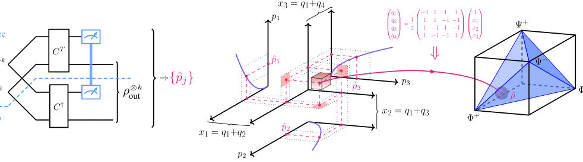
<figcaption class="paper-figure-caption"><b>Fig 2.</b> Fig. 2. Abstract structure of a distimation protocol. (a) General bilocal Clifford distillation protocols [7]. Two parties share n copies of an entangled state. They apply a multi-qubit Clifford gate and its conjugate. They then measure n −k copies, share the outcomes over a classical communication channel, and keep the state depending on the coincidence pattern of the outcomes. The empirical distributions of outcomes {ˆpj} exhibit strong concentration around the true underlying distribution, converging towards it at an exponential rate as the number of repetitions of the distillation protocol increases. These are described by the pertinent concentration inequalities relevant to distimation...</figcaption>
</figure>
<figure class="paper-figure-card">
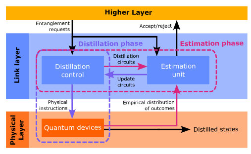
<figcaption class="paper-figure-caption"><b>Fig 3.</b> Fig. 3. High-level schematic of the role of distimation in a quantum network. Higher layers send entanglement requests to lower layers, specifying explicit quality requirements such as latency and entanglement fidelity. The distillation control mechanism at the link layer determines the amount of distillation necessary to ensure entanglement quality, that is, to meet the latency and fidelity requirements. During the distillation phase, instructions to perform distillation are sent by the link layer to the quantum hardware platform (physical layer). In the estimation phase, information about the distillation circuits, together with the empirical distribution of outcomes (i.e., the syndrome...</figcaption>
</figure>
<figure class="paper-figure-card">
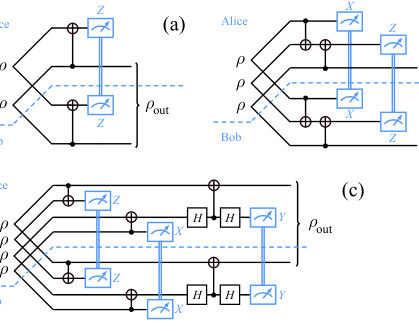
<figcaption class="paper-figure-caption"><b>Fig 4.</b> Fig. 4. Bilocal Clifford entanglement distillation protocols studied for disti- mation. (a) The 2-to-1 BBPSSW protocol [5]. (b) The 3-to-1 double selection protocol [6], with computational and Hadamard measurement settings. (c) A 4-to-1 entanglement distillation protocol [11], with three distinct measurement settings. The blue solid lines represent the classical communication channels between the two users. In all protocols, a successful distillation is heralded if corresponding marginal measurement outcomes coincide.</figcaption>
</figure>
<figure class="paper-figure-card">
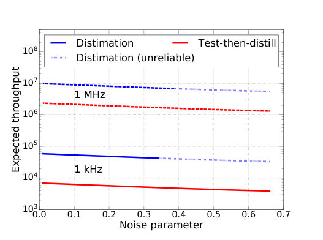
<figcaption class="paper-figure-caption"><b>Fig 5.</b> Fig. 5. The expected throughput of distilled states using one round of the BBPSSW protocol with input isotropic states. Here, we fix the estimation’s accuracy and failure probability. We set both strategies to be active for 120 and 20 seconds, given the generation rates of 1 kHz (solid red/blue lines) and 1 MHz (dashed red/blue lines), respectively. In both the kilohertz (estimation error and failure probability of estimation equal to 10−2) and megahertz (estimation error and failure probability of estimation equal to 10−3) cases, there is a quantitative advantage in expected throughput when the distimation approach is used. However, the estimate obtained from distimation can be unreliable...</figcaption>
</figure>
</div>

<p><strong>Summary.</strong> This paper introduces 'distimation,' a novel protocol that merges state estimation with entanglement distillation in quantum networks. By reusing classical syndrome data from the purification process, it eliminates redundant testing stages required by older protocols. This results in significantly lower resource consumption and reduced latency, making quantum networking more feasible for current hardware limitations.</p>
<p><strong>Why it may be interesting.</strong> It provides a blueprint for optimizing quantum network protocols by merging two distinct functional layers (estimation and purification) into one efficient physical process, which is crucial for near-term hardware deployment.</p>
<details>
<summary>Detailed structure</summary>
<p><strong>Main problem.</strong> Traditional quantum network protocols require separate, resource-intensive steps for state estimation (quality checking) and entanglement distillation.</p>
<p><strong>Main result.</strong> Distimation merges these two processes by extracting necessary state estimation data directly from the classical syndromes generated during entanglement distillation, significantly reducing required raw entangled pairs and latency.</p>
<p><strong>Method.</strong> The core method is to eliminate the dedicated 'test-then-distill' stage by treating syndrome measurements as dual-purpose: simultaneously purifying entanglement and characterizing the underlying channel noise.</p>
<p><strong>Model / system.</strong> The work models quantum network stacks, focusing on establishing high-fidelity entanglement between nodes using raw entangled pairs (e.g., Bell pairs) generated over noisy links.</p>
<p><strong>Key observables.</strong> Expected throughput of distilled Bell pairs; characterization of Bell-diagonal coefficients ($q_i$); fidelity and Pauli error probability estimates.</p>
<p><strong>Important parameters / regimes.</strong> Noise parameter ($\epsilon$); raw entanglement generation rate (e.g., 1 kHz or 1 MHz); target accuracy and failure probability.</p>
<p><strong>Assumptions / limitations.</strong> Assumes that local noise processes are dominant and well-characterized; assumes the viability of distillation protocols; requires hardware capable of buffering pairs within coherence times.</p>
<p><strong>Figures summary.</strong> Figures illustrate the integration of distimation into quantum network stack models (QRSA, Dahlberg et al.'s), showing the flow from distillation to estimation, and comparing throughput vs. noise for different regimes.</p>
<p><strong>Paper structure.</strong> The paper surveys the principles by contrasting the traditional 'test-then-distill' pipeline with the integrated distimation approach, quantifies resource gains using throughput calculations across various noise models, and outlines a research roadmap addressing hardware limitations and generalization challenges.</p>
</details>
<details>
<summary>Abstract</summary>
<p>Estimating the quality of raw entangled states and distilling high-fidelity entanglement traditionally require two separate link-layer protocols in a quantum network stack, each consuming its own share of fragile entangled pairs. The recently introduced distimation concept merges these two protocols by directly extracting state estimation data from the classical syndromes generated during entanglement distillation. By removing the dedicated "test-then-distill'' stage, distimation lowers the number of raw entangled pairs required to operate the network, reduces latency, and streamlines the network control plane. The paradigm is especially attractive for near-term hardware platforms, where entanglement generation remains a severe bottleneck. Alongside these promises, distimation introduces new engineering challenges, ranging from accurate local-device modeling to protocols for tracking time-varying sources. This article surveys the core principles of distimation, quantifies expected gains for realistic architectures, and outlines a research roadmap toward making distimation a standard building block in future quantum networks.</p>
</details>
<p><sub><a href="#top">↑ back to top</a></sub></p>

<p><a id="paper-2608.07938"></a></p>
<h3 id="quantum-chinese-remainder-clock"><a href="http://arxiv.org/abs/2608.07938v1">Quantum Chinese Remainder Clock</a></h3>
<p><strong>Authors:</strong> Ivri Nagar, Alioscia Hamma, Mikel Palmero, Matthew Radzihovsky, Shouzhuo Yang, Seth Lloyd<br>
<strong>Type:</strong> theory · <strong>Category:</strong> other · <strong>PDF:</strong> <a href="https://arxiv.org/pdf/2608.07938v1">https://arxiv.org/pdf/2608.07938v1</a><br>
<strong>Analysis basis:</strong> full PDF text, analyzed in chunks
<strong>Topic relevance:</strong> <code>quantum measurements</code> <strong>3/5</strong> · <code>analog quantum simulation</code> <strong>1/5</strong></p>
<div class="figure-strip-hint">↔ Scroll figures horizontally</div>
<div class="paper-figures-scroll">
<figure class="paper-figure-card">
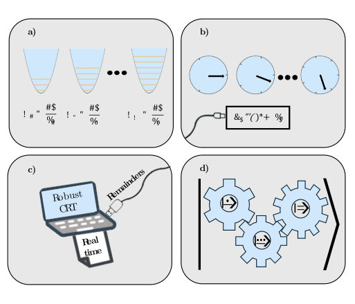
<figcaption class="paper-figure-caption"><b>Fig 1.</b> FIG. 1. Schematic of the proposed protocol. a) State prepa- ration: We prepare n truncated harmonic oscillators, with coprime periods, in the optimal initial states for phase esti- mation. b) Measuring the time t: We perform the optimal Heisenberg-limited measurement of phase on each oscillator, to find the remainder of t by each period. c) Chinese re- mainder theorem reconstruction: From the remainders, we recover t, using a robust algorithm to overcome potential ex- perimental errors. d) Extended dynamical range: This idea is reminiscent of the structure of the Maya Long Count Cal- endar. With enough periods (denoted by Maya numerals in kets in the figure), we can extend the dynamical...</figcaption>
</figure>
<figure class="paper-figure-card">
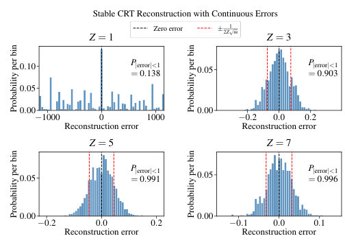
<figcaption class="paper-figure-caption"><b>Fig 2.</b> FIG. 2. Reconstruction errors for the proposed protocol with {xj} = {2, 3, 5, 7, 11} and Z ∈{1, 3, 5, 7}, for N = 1000 trial times chosen uniformly at random from [0, 2310) [15]. For Z = 1 (no error correction), the error is distributed across the entire range, while for larger Z the distribution is peaked around 0 with uncertainty 1 2Z√m (red dashed lines) – e.g. Z = 5 is sufficient to ensure error less than 1 in 99% of cases.</figcaption>
</figure>
</div>

<p><strong>Summary.</strong> This paper proposes a novel 'Quantum Chinese Remainder Clock' that uses multiple independent quantum oscillators to measure time over an extended range $Q = \prod x_j$. It achieves Heisenberg-limited precision by combining optimal phase measurements with the mathematical framework of the CRT. This represents a significant theoretical advancement for building high-precision, multi-scale quantum sensors.</p>
<p><strong>Why it may be interesting.</strong> This work directly applies advanced quantum metrology techniques (Holevo measurements) to build a complex, multi-scale measurement device. The combination of number theory (CRT) with quantum estimation theory is highly relevant for developing next-generation quantum sensors using atomic or cavity QED platforms.</p>
<details>
<summary>Detailed structure</summary>
<p><strong>Main problem.</strong> The core problem is extending the measurement range of quantum clocks or interferometers beyond the period of individual constituent oscillators by leveraging the mathematical structure of the Chinese Remainder Theorem (CRT).</p>
<p><strong>Main result.</strong> The authors provide an optimal protocol achieving Heisenberg-limited precision for time estimation up to a product scale $Q = \prod x_j$, while also introducing fault-tolerant post-processing for error resilience.</p>
<p><strong>Method.</strong> The method involves using the Holevo covariant measurement on multiple, pairwise coprime oscillators to estimate individual time remainders ($t \pmod{x_j}$), which are then combined via CRT inversion.</p>
<p><strong>Model / system.</strong> The system is modeled as a 'quantum-mechanical CRT clock' composed of $m$ independent quantum oscillators (e.g., atoms/trapped ions) whose evolution is governed by distinct Hamiltonians $H_j$.</p>
<p><strong>Key observables.</strong> The primary observables are the phase states $|\varphi
angle_j$ and the estimated time remainders $   ilde{t}_j$, which are used to reconstruct the total elapsed time $t$.</p>
<p><strong>Important parameters / regimes.</strong> Key parameters include the coprime periods $\{x_j\}$, the truncation scale multiplier $Z$, and the resulting uncertainty scaling $\Delta t \propto 1/(2Z\sqrt{m})$.</p>
<p><strong>Assumptions / limitations.</strong> The protocol assumes that errors manifest primarily as incorrectly rounded remainders, allowing for a robust post-processing step based on CRT inversion.</p>
<p><strong>Figures summary.</strong> Figure 1 schematically illustrates the process: state preparation in optimal states, Heisenberg-limited phase measurement on each oscillator, and final time reconstruction using a robust CRT algorithm. Figure 2 shows the reconstruction error decreasing sharply as the truncation scale $Z$ increases.</p>
<p><strong>Paper structure.</strong> The paper first establishes the physical model using multiple oscillators and then details the measurement protocol: optimal state preparation, performing Holevo covariant measurements to get remainders, applying a specialized rounding/correction procedure, and finally reconstructing the total time via CRT inversion.</p>
</details>
<details>
<summary>Abstract</summary>
<p>The Chinese remainder theorem is used in metrology for extending the range of quantum clocks/radar/interferometry, where the phase of a signal is known relative to a set of oscillators with different periods. This paper investigates the performance of a quantum-mechanical Chinese remainder clock, consisting of atoms/oscillators with pairwise coprime periods. We provide the optimal initial state and the optimal Heisenberg-limited quantum measurements for measuring time up to the product of the periods. We introduce a novel fault-tolerant post-processing protocol that allows reconstruction of the correct time even in the presence of errors in the remainders.</p>
</details>
<p><sub><a href="#top">↑ back to top</a></sub></p>

<p><a id="paper-2608.08962"></a></p>
<h3 id="quantum-gouy-phase-singularities-in-a-propagating-biphoton-state"><a href="http://arxiv.org/abs/2608.08962v1">Quantum Gouy phase singularities in a propagating biphoton state</a></h3>
<p><strong>Authors:</strong> Takumi Jinushi, Hirokazu Kobayashi<br>
<strong>Type:</strong> theory · <strong>Category:</strong> other · <strong>PDF:</strong> <a href="https://arxiv.org/pdf/2608.08962v1">https://arxiv.org/pdf/2608.08962v1</a><br>
<strong>Analysis basis:</strong> full PDF text, analyzed in chunks
<strong>Topic relevance:</strong> <code>interference shaping light</code> <strong>3/5</strong> · <code>quantum optics experiment</code> <strong>1/5</strong></p>
<div class="figure-strip-hint">↔ Scroll figures horizontally</div>
<div class="paper-figures-scroll">
<figure class="paper-figure-card">
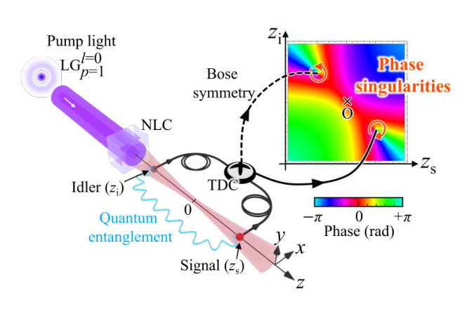
<figcaption class="paper-figure-caption"><b>Fig 1.</b> Figure 1: Conceptual diagram for observing Gouy-phase-induced NPSs in a propagating biphoton state. An LG pump beam with higher-order radial mode incident on a nonlinear crystal (NLC) generates spatially entangled signal and idler photons through SPDC. The photons propagate along the z direction and are detected after distances zs and zi, respectively. Although unequal propagation distances lead to a relative arrival-time delay, photon pairs within the coincidence time window are selected by the time-to-digital converter (TDC). These pairs are used to evaluate the biphoton amplitude and phase in the longitudinal propagation space (zs, zi), where the quantum Gouy phase produces the NPSs.</figcaption>
</figure>
<figure class="paper-figure-card">
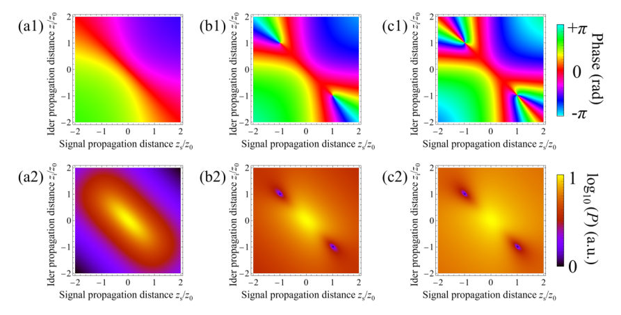
<figcaption class="paper-figure-caption"><b>Fig 2.</b> Figure 2: Two-dimensional quantum Gouy phase and probability-density distributions on the biphoton optical axes for different LG pump modes: (a) LGl=0 p=0, (b) LG0 1, and (c) LG0 2. The upper panels show the phase distributions, and the lower panels show the corresponding probability-density distributions. For the fundamental Gaussian pump LG0 0, no phase singularities appear. For higher-order radial pump modes LG0 1 and LG0 2, NPSs appear symmetrically at z = ±z0, namely at z+ = 0 and z−= ±z0, where the probability density simultaneously vanishes. The magnitudes of their topological charges coincide with the radial mode number p of the pump field.</figcaption>
</figure>
<figure class="paper-figure-card">
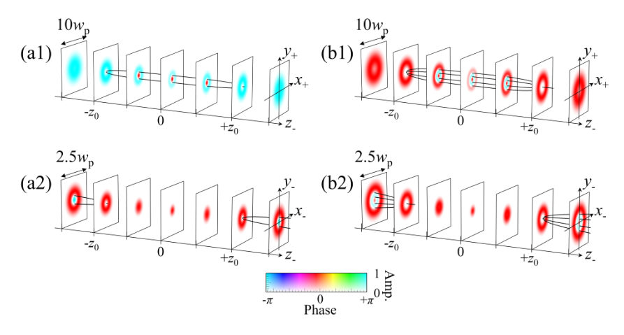
<figcaption class="paper-figure-caption"><b>Fig 3.</b> Figure 3: Propagation dynamics of the biphoton wavefunction in the transverse coordinates r± = (x±, y±) and the numerically calculated trajectories of its zeros for the pump modes (a) LG0 1 and (b) LG0 2. The upper and lower panels show the complex-amplitude distributions in the r+ and r−planes, respectively. For the LG0 1 pump mode, a single ring-shaped zero moves toward the optical axis during propagation along z−, collapses onto the axis at the NPS positions z−= ±z0, and is then transferred from the r+ plane to the r− plane. For the LG0 2 pump mode, two ring-shaped zeros undergo the same process, reflecting the radial mode number p of the pump field.</figcaption>
</figure>
<figure class="paper-figure-card">
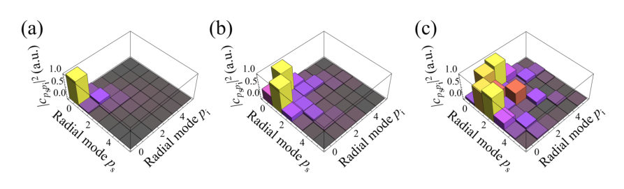
<figcaption class="paper-figure-caption"><b>Fig 4.</b> Figure 4: Radial-mode decomposition |cps,pi|2 obtained from the LG-mode expansion of the biphoton wave- function for the pump modes (a) LGl=0 p=0, (b) LG0 1, and (c) LG0 2. For the fundamental Gaussian pump in (a), the distribution is concentrated mainly at (ps, pi) = (0, 0). In contrast, for the higher-order radial pump modes in (b) and (c), substantial weights appear in symmetric off-diagonal mode pairs, in which one photon occupies the fundamental radial mode and the other occupies a higher-order radial mode. In particular, the LG0 1 pump produces pronounced peaks at (ps, pi) = (1, 0) and (0, 1), whereas the LG0 2 pump produces strong contributions at (1, 0), (0, 1), (2, 0), and (0, 2).</figcaption>
</figure>
<figure class="paper-figure-card">
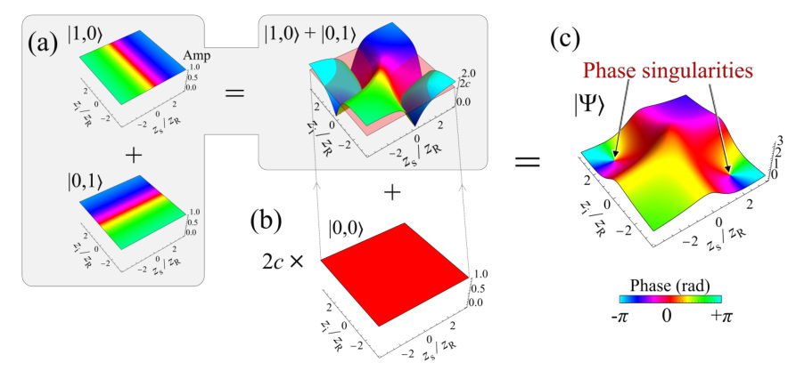
<figcaption class="paper-figure-caption"><b>Fig 5.</b> Figure 5: The biphoton wavefunction in the two-dimensional longitudinal plane is illustrated for the minimal radial-mode set (p0, p1, p2) = (0, 1, 0), corresponding to the superposition {|0, 0⟩, |1, 0⟩, |0, 1⟩}. For clarity, the mode-independent common complex amplitude is omitted. The surface height represents the magnitude of the wavefunction, while the color denotes its phase. (a) The constituent states |1, 0⟩and |0, 1⟩exhibit Gouy-phase variations along the zs and zi directions, respectively. Their superposition, |1, 0⟩+|0, 1⟩, produces a complex field that is symmetric about the z+ axis and contains two curved nodal lines. (b) A fundamental radial-mode component |0, 0⟩, which carries...</figcaption>
</figure>
</div>

<p><strong>Summary.</strong> This paper demonstrates that the quantum Gouy phase induces nonlocal phase singularities (NPSs) in the joint wavefunction of entangled photon pairs propagating over different distances. By analyzing SPDC sources pumped by Laguerre-Gaussian beams, the authors show these NPSs are characterized by quantized topological charges related to the pump's radial mode number. This extends singular optics concepts from transverse space into longitudinal propagation dynamics.</p>
<p><strong>Why it may be interesting.</strong> This work bridges concepts from singular optics (Gouy phase) into quantum entanglement dynamics, providing a novel framework for characterizing topological structures in non-local quantum states.</p>
<details>
<summary>Detailed structure</summary>
<p><strong>Main problem.</strong> The study investigates the generation and properties of nonlocal phase singularities (NPSs) within the joint wavefunction of entangled photon pairs.</p>
<p><strong>Main result.</strong> Quantum Gouy phases generate NPSs in the longitudinal propagation space $(z_s, z_i)$ when photons propagate over different distances. The topological charge magnitude is quantized by the pump's radial mode number $p$.</p>
<p><strong>Method.</strong> The analysis uses wavefunction transformations from momentum to position space and applies concepts from singular optics, specifically analyzing destructive interference between spatial-mode components.</p>
<p><strong>Model / system.</strong> The system models entangled biphoton states generated via Spontaneous Parametric Down-Conversion (SPDC) pumped by a Laguerre–Gaussian beam. The analysis focuses on the joint longitudinal propagation space $(z_s, z_i)$.</p>
<p><strong>Key observables.</strong> Nonlocal phase singularities (NPSs), isolated intensity nulls with quantized phase winding, and the topological charge $\Gamma$.</p>
<p><strong>Important parameters / regimes.</strong> Pump radial mode number $p$, Rayleigh ranges of pump/phase-matching functions ($z_{Rp}, z_{R^-}$), and propagation distances ($z_s, z_i$).</p>
<p><strong>Assumptions / limitations.</strong> The analysis assumes CW pumping and utilizes approximations for the phase-matching function ($   ilde{\Phi}$). For isolated NPSs, a non-separable spatial-mode superposition is required.</p>
<p><strong>Figures summary.</strong> Figures illustrate the generation of NPS zeros in the $(z_s, z_i)$ plane using different pump modes ($p=0$ vs $p>0$), and show vortex filament collapse onto the optical axis at specific longitudinal positions $\pm z_0$.</p>
<p><strong>Paper structure.</strong> The paper progresses from establishing the nonlocal nature of NPS generation in $(z_s, z_i)$ space using LG pumps, to calculating the precise topological charge based on radial modes, and finally generalizing the analysis by examining multi-component superpositions and counterpropagating regimes.</p>
</details>
<details>
<summary>Abstract</summary>
<p>Phase singularities are topological defects around which the phase winds by an integer multiple of $2π$. In entangled multiphoton states, they can emerge nonlocally in the joint wavefunction rather than in the field of either subsystem alone. Here we show that the quantum Gouy phase generates nonlocal phase singularities (NPSs) in the two-dimensional longitudinal propagation space of entangled photon pairs. We consider photon pairs produced via spontaneous parametric down-conversion pumped by a Laguerre--Gaussian beam, with the signal and idler photons propagating independently over different longitudinal distances. The accumulated radial-mode-dependent Gouy phases induce destructive interference among biphoton spatial-mode components, producing isolated intensity nulls with quantized phase winding. For a pump with radial mode number $p$, the NPS topological charges have magnitude $p$, whereas their propagation positions and charge signs are governed by the Rayleigh ranges of the pump and phase-matching functions. We further identify the radial-mode structure required for their formation, showing that separable biphoton states cannot support isolated longitudinal NPSs. Our results extend nonlocal singular optics from transverse spatial correlations to longitudinal propagation dynamics and establish propagation distance as a coordinate space for topological structures in entangled photon pairs.</p>
</details>
<p><sub><a href="#top">↑ back to top</a></sub></p>

<p><a id="paper-2608.09533"></a></p>
<h3 id="spin-polarization-of-a-two-dimensional-electron-liquid"><a href="http://arxiv.org/abs/2608.09533v1">Spin Polarization of a Two-Dimensional Electron Liquid</a></h3>
<p><strong>Authors:</strong> G. A. Nikolaev, M. E. Sergeev, I. V. Kukushkin, A. V. Shchepetilnikov<br>
<strong>Type:</strong> experiment · <strong>Category:</strong> strongly correlated electrons · <strong>PDF:</strong> <a href="https://arxiv.org/pdf/2608.09533v1">https://arxiv.org/pdf/2608.09533v1</a><br>
<strong>Analysis basis:</strong> full PDF text, analyzed in chunks
<strong>Topic relevance:</strong> <code>quantum measurements</code> <strong>3/5</strong> · <code>Keldysh / 2PI / non-Gaussian methods</code> <strong>1/5</strong></p>
<div class="figure-strip-hint">↔ Scroll figures horizontally</div>
<div class="paper-figures-scroll">
<figure class="paper-figure-card">
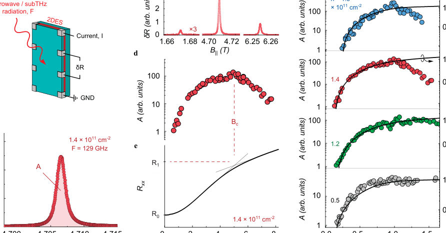
<figcaption class="paper-figure-caption"><b>Fig 1.</b> FIG. 1. Electrical detection of electron spin resonance in a two-dimensional electron liquid. a Schematic of the experimental configuration for broadband electrically detected ESR. Microwave or sub-terahertz radiation induces a resonant change in the longitudinal resistance, δR, which is detected electrically. b Representative ESR resonance measured at F = 129 GHz for the sample with electron density n = 1.4 × 1011 cm−2. The shaded area defines the integrated ESR intensity used throughout this work to minimize the influence of inhomogeneous line broadening. c ESR spectra measured at three excitation frequencies, corresponding to different resonance magnetic fields. The resonance intensity...</figcaption>
</figure>
<figure class="paper-figure-card">
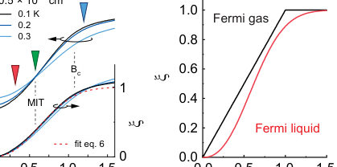
<figcaption class="paper-figure-caption"><b>Fig 2.</b> FIG. 2. Longitudinal resistance as a quantitative mea- sure of spin polarization. a Temperature dependence of the ESR amplitude normalized by the spin polarization at B∥/Bc = 0.3, 0.5, and 1.2 (excitation frequencies of 10, 15, and 37 GHz, respectively) for the sample with n = 0.5 × 1011 cm−2. The magnetic field B∥= 0.5Bc coincides with the metal–insulator transition, where dRxx/dT = 0. The persis- tence of nearly identical temperature dependences at all three fields demonstrates that the ESR signal is governed by the spin sensitivity of the resistance rather than by resonant heat- ing. The black curve shows ∆R ∝Rxx(0.2Bc, T)−Rxx(0, T), in agreement with Eqs. (4) and (5). b Longitudinal...</figcaption>
</figure>
<figure class="paper-figure-card">

<figcaption class="paper-figure-caption"><b>Fig 3.</b> FIG. 3. Spin-polarization map of the electron liquid. Spin polarization reconstructed from magnetotransport using Eq. (8) is shown as a function of parallel magnetic field and electron density. The color scale represents the spin polariza- tion ξ(B, n), dashed contours denote constant polarization. The diagram visualizes the continuous evolution of the elec- tron liquid from a partially spin-polarized paramagnetic Fermi liquid to a fully spin-polarized Fermi liquid. The right axis shows the corresponding interaction parameter (dimension- less Wigner-Seitz radius) rs ≡1 (√πnaB), where effective Bohr radius aB = e2m∗/(4πε0ε¯h2).</figcaption>
</figure>
</div>

<p><strong>Summary.</strong> The research demonstrates an experimental technique to quantify the spin polarization of a 2DES by analyzing its longitudinal resistance ($\delta R$) via electrically detected ESR. By establishing a parameter-free link between $\delta R$ and spin polarization, the authors successfully map the magnetic state of the electron liquid across varying densities and fields. This method offers a powerful tool for studying strongly correlated electronic phases.</p>
<p><strong>Why it may be interesting.</strong> This work provides a powerful, non-invasive method to probe fundamental quantum properties (spin state) in condensed matter systems using only transport measurements, which is highly relevant for understanding correlated electron physics beyond simple band theory.</p>
<details>
<summary>Detailed structure</summary>
<p><strong>Main problem.</strong> To establish a direct quantitative relationship between the longitudinal resistance ($\delta R$) of a strongly correlated two-dimensional electron system (2DES) and its equilibrium spin polarization ($\xi$).</p>
<p><strong>Main result.</strong> The study successfully established a parameter-free relation showing that $\xi$ can be quantitatively reconstructed solely from magnetotransport measurements, reproducing the known temperature and magnetic field dependence of ESR signals.</p>
<p><strong>Method.</strong> Measurements combine electrical detection of Electron Spin Resonance (ESR) with standard magnetotransport measurements on high-mobility 2DESs. The key technique involves deriving relationships by assuming the signal change is governed by $\partial R / \partial \xi$.</p>
<p><strong>Model / system.</strong> The physical system is a Two-Dimensional Electron Liquid (2DES), studied in ZnO/MgZnO heterostructures, which exhibits strong electron correlations and spin polarization effects.</p>
<p><strong>Key observables.</strong> Longitudinal Resistance ($\delta R$), ESR amplitude ($A(B, T)$), Spin Polarization ($\xi$), Critical Field ($B_c$).</p>
<p><strong>Important parameters / regimes.</strong> Carrier densities ($n = 0.5 - 1.8 	imes 10^{11} 	ext{ cm}^{-2}$), Magnetic field ($B$), Temperature ($T$).</p>
<p><strong>Assumptions / limitations.</strong> The analysis assumes that the ESR signal is dominated by changes in spin polarization ($\partial R / \partial \xi$) rather than resonant heating, and that orbital coupling effects can be minimized or accounted for.</p>
<p><strong>Figures summary.</strong> Figures illustrate the setup comparing $\delta R$ vs $B_{||}$ at various frequencies; they show the increase of ESR amplitude as polarization approaches saturation ($B_{||}/B_c \simeq 1$), and present reconstructed spin-polarization maps ($\xi(B, n)$).</p>
<p><strong>Paper structure.</strong> The paper proceeds by first establishing the experimental setup using ESR detection. It then develops theoretical relationships linking $\delta R$ to $\xi$, ruling out alternative mechanisms like resonant heating. Finally, it applies these relations to map the spin polarization across different carrier densities and magnetic fields.</p>
</details>
<details>
<summary>Abstract</summary>
<p>We show experimentally that the longitudinal resistance of a strongly correlated two-dimensional electron system provides a direct quantitative measure of its spin polarization. Using electrically detected electron spin resonance as an independent calibration of the spin state, we establish a parameter-free relation between magnetotransport and spin polarization, enabling spin polarization to be reconstructed from transport measurements alone. The extracted spin polarization quantitatively explains the magnetic field and temperature dependence of the electrically detected spin-resonance signal and allows the magnetic state of the electron liquid to be mapped over a broad range of carrier densities and magnetic fields.</p>
</details>
<p><sub><a href="#top">↑ back to top</a></sub></p>

<p><a id="paper-2608.07706"></a></p>
<h3 id="the-case-for-the-everett-multiverse"><a href="http://arxiv.org/abs/2608.07706v1">The Case for the Everett Multiverse</a></h3>
<p><strong>Authors:</strong> David Wallace<br>
<strong>Type:</strong> theory · <strong>Category:</strong> other · <strong>PDF:</strong> <a href="https://arxiv.org/pdf/2608.07706v1">https://arxiv.org/pdf/2608.07706v1</a><br>
<strong>Analysis basis:</strong> full PDF text, analyzed in chunks
<strong>Topic relevance:</strong> <code>quantum measurements</code> <strong>3/5</strong> · <code>interference shaping light</code> <strong>1/5</strong></p>
<div class="figure-strip-hint">↔ Scroll figures horizontally</div>
<div class="paper-figures-scroll">
<figure class="paper-figure-card">

<figcaption class="paper-figure-caption"><b>Fig 1.</b> Low-resolution page preview, page 2</figcaption>
</figure>
<figure class="paper-figure-card">

<figcaption class="paper-figure-caption"><b>Fig 2.</b> Low-resolution page preview, page 3</figcaption>
</figure>
<figure class="paper-figure-card">

<figcaption class="paper-figure-caption"><b>Fig 3.</b> Low-resolution page preview, page 4</figcaption>
</figure>
<figure class="paper-figure-card">

<figcaption class="paper-figure-caption"><b>Fig 4.</b> Low-resolution page preview, page 5</figcaption>
</figure>
<figure class="paper-figure-card">

<figcaption class="paper-figure-caption"><b>Fig 5.</b> Low-resolution page preview, page 6</figcaption>
</figure>
</div>

<p><strong>Summary.</strong> This paper argues that quantum mechanics must be understood through the Many-Worlds (Everettian) framework because other interpretations fail to explain key experimental results like interference. It uses conceptual analysis, particularly referencing the two-slit experiment, to show that treating the state vector merely as 'knowledge' is inconsistent with QM's mathematical structure.</p>
<p><strong>Why it may be interesting.</strong> While highly philosophical, its rigorous critique of measurement processes and the necessity of unitary evolution is foundational for any theoretical physicist working on open quantum systems or decoherence models.</p>
<details>
<summary>Detailed structure</summary>
<p><strong>Main problem.</strong> The central issue is resolving the quantum measurement problem by determining the correct interpretational status of quantum mechanics (QM). The author argues that standard interpretations fail to account for QM's full empirical content.</p>
<p><strong>Main result.</strong> The paper strongly advocates for the Everettian Many-Worlds interpretation as necessary because alternative epistemic or inferential views are contradicted by phenomena like quantum interference. It suggests objective probabilities might emerge from amplitude moduli in the decoherent limit.</p>
<p><strong>Method.</strong> The analysis uses conceptual comparison, contrasting the mathematical formalism of QM (unitary evolution and Born rule) against classical expectations and philosophical interpretations.</p>
<p><strong>Model / system.</strong> The primary diagnostic tool is the two-slit experiment using carbon atoms. The underlying model is standard quantum mechanics, focusing on the state vector $|\psi
angle$ evolving unitarily.</p>
<p><strong>Key observables.</strong> Interference patterns (demonstrating non-additive probability sums), and objective probabilities derived from amplitude moduli in the decoherent limit.</p>
<p><strong>Important parameters / regimes.</strong> The scale dependence of the 'branch count' is noted as a key, unstable parameter; otherwise, the focus is on the mathematical structure itself.</p>
<p><strong>Assumptions / limitations.</strong> It assumes the validity of unitary quantum dynamics and critiques interpretations that rely on assuming prior metaphysical or epistemic constraints on physics.</p>
<p><strong>Paper structure.</strong> The paper progresses by first establishing the conflict between QM formalism and classical intuition (Chunk 1). It then uses the two-slit experiment to invalidate the purely epistemic view (Chunk 2). Finally, it explores the ontological implications of the Everettian framework, discussing emergent concepts like space and probability in the multiverse context (Chunk 3).</p>
</details>
<details>
<summary>Abstract</summary>
<p>I give a non-technical presentation of the argument that quantum mechanics, in the form in which it is currently used, needs to be understood in many-worlds (Everettian) terms; the alternatives that have been discussed are at present not able to reproduce the full empirical content of the theory.   This is a draft of a chapter for the forthcoming \emph{Blackwell Companion to Philosophy and the Multiverse (Klaas Kraay and Daniel Rubio, eds.) }</p>
</details>
<p><sub><a href="#top">↑ back to top</a></sub></p>

<p><a id="paper-2608.07717"></a></p>
<h3 id="implicit-differentiation-for-measurement-efficient-bilevel-quantum-classical-optimization"><a href="http://arxiv.org/abs/2608.07717v1">Implicit Differentiation for Measurement-Efficient Bilevel Quantum-Classical Optimization</a></h3>
<p><strong>Authors:</strong> Tobias Rohe, Markus Baumann, Federico Harjes Ruiloba, Maximilian Zorn, Jonas Stein, Claudia Linnhoff-Popien<br>
<strong>Type:</strong> theory · <strong>Category:</strong> quantum information and computing · <strong>PDF:</strong> <a href="https://arxiv.org/pdf/2608.07717v1">https://arxiv.org/pdf/2608.07717v1</a><br>
<strong>Analysis basis:</strong> full PDF text, analyzed in chunks
<strong>Topic relevance:</strong> <code>quantum measurements</code> <strong>3/5</strong></p>
<div class="figure-strip-hint">↔ Scroll figures horizontally</div>
<div class="paper-figures-scroll">
<figure class="paper-figure-card">

<figcaption class="paper-figure-caption"><b>Fig 1.</b> Fig. 2: Bilevel optimization diagnostics for the periodic 1D family showing per-instance comparisons between CR-ID and central finite-difference value probing (FD) under a matched evaluation budget B = 1830. Each point corresponds to one problem instance (N = 300), with color indicating the edge density pedge. The black diagonal denotes equal performance. Points above the diagonal indicate instances where ID outper- forms FD. (a) Best-so-far normalized expectation value J/J∗</figcaption>
</figure>
<figure class="paper-figure-card">

<figcaption class="paper-figure-caption"><b>Fig 2.</b> Fig. 1: Bilevel optimization diagnostics VQE on periodic family. (a) Classical envelope ˆF ∗(λ) with visited outer iterates overlaid (representative instance). (b) Active-branch structure across λ; switch points mark changes of the optimal bitstring.</figcaption>
</figure>
<figure class="paper-figure-card">

<figcaption class="paper-figure-caption"><b>Fig 3.</b> Fig. 3: Budget efficiency in the multi-dimensional (λ) setting under a matched evaluation budget. Here, the outer variable is edge-wise, i.e., λ ∈R|E| assigns one control parameter λe per edge. (a) Best-so-far normalized objec- tive J/J∗versus cumulative energy evaluations. (b) Budget- matched best-of-S readout J/J∗across instances in the multi- dimensional setting, comparing ID and FD.</figcaption>
</figure>
<figure class="paper-figure-card">

<figcaption class="paper-figure-caption"><b>Fig 4.</b> Fig. 4: VQE versus QAOA under a matched objective- evaluation budget. (a) Representative instance: classical en- velope bF(λ) (black) with the outer iterates {λt} visited by VQE (red) and QAOA (blue); filled markers show expecta- tion estimates and open markers indicate best-of-S readout (S = 32). (b) Median best-so-far normalized objective J/J∗</figcaption>
</figure>
</div>

<p><strong>Summary.</strong> This work tackles bilevel optimization in quantum computing where the problem Hamiltonian changes based on an outer control parameter. The authors introduce Correlator-Reuse Implicit Differentiation (CR-ID) to calculate necessary outer gradients without incurring massive measurement overheads. CR-ID demonstrates significant, systematic performance gains over standard finite-difference approaches across various benchmark problems.</p>
<p><strong>Why it may be interesting.</strong> It provides a concrete algorithmic improvement for optimizing complex quantum circuits whose cost landscape is tuned by external classical parameters, which is crucial for real-world quantum machine learning applications.</p>
<details>
<summary>Detailed structure</summary>
<p><strong>Main problem.</strong> The paper addresses efficiently solving bilevel quantum-classical optimization problems where the cost function coefficients depend on tunable external parameters.</p>
<p><strong>Main result.</strong> A novel technique, Correlator-Reuse Implicit Differentiation (CR-ID), significantly improves budget-normalized efficiency over finite-difference methods by reusing existing quantum measurements to estimate outer gradients.</p>
<p><strong>Method.</strong> It adapts the envelope theorem from classical optimization to quantum circuits, allowing outer gradient calculation by reweighting correlators measured during the inner VQA energy estimation step.</p>
<p><strong>Model / system.</strong> The model uses Variational Quantum Algorithms (VQAs) like VQE and QAOA to minimize an expectation value derived from a parametric diagonal cost Hamiltonian, often applied to Max-Cut problems.</p>
<p><strong>Key observables.</strong> Budget efficiency (AUCB), best-so-far normalized expectation value ($J/J^*$), and tail hit-rate ($p_{good}$).</p>
<p><strong>Important parameters / regimes.</strong> The outer control parameter $\lambda$, which dictates the cost Hamiltonian coefficients $w_e(\lambda)$, tested across linear, quadratic, and periodic families.</p>
<p><strong>Assumptions / limitations.</strong> The method assumes that the inner optimization converges to a stationary point where the envelope theorem can be applied; it also relies on white-box knowledge of weight sensitivities $rac{d w_e(\lambda)}{d\lambda}$.</p>
<p><strong>Figures summary.</strong> Figures compare CR-ID vs. Finite Difference methods showing superior budget efficiency in both 1D and multi-dimensional settings, while also comparing VQE's consistent performance advantage over QAOA.</p>
<p><strong>Paper structure.</strong> The paper introduces the bilevel optimization structure, develops the CR-ID technique based on the envelope theorem, validates it against finite differences using various parameter families, and compares its performance across different quantum algorithms (VQE vs. QAOA).</p>
</details>
<details>
<summary>Abstract</summary>
<p>Quantum optimization has shown promising results for quadratic unconstrained binary optimization (QUBO) problems. Real-world applications, however, often involve polynomial coefficients that depend on tunable external factors - such as demand forecasts or risk preferences - giving rise to bilevel optimization structures. We show how variational quantum algorithms (VQAs) can efficiently handle such parametric problems, making three contributions. First, we propose a bilevel optimization model for diagonal cost Hamiltonians where coefficients depend on a tunable outer parameter: an outer loop adjusts this parameter - reshaping the cost landscape - while an inner VQA optimizes circuit variables. Second, since derivative-free probing methods incur a multiplicative overhead when each outer evaluation requires a complete inner solve, we develop correlator-reuse implicit differentiation (CR-ID), which obtains outer gradients by reusing quantum measurements already collected during inner energy estimation, requiring essentially no additional circuit executions. Experiments across three coefficient families show that CR-ID consistently improves budget-normalized efficiency by ~4\% in 1D and over 14\% in multi-dimensional settings, showing a significant performance advantage compared to finite-difference methods. Third, we show that this property is architecture-dependent: VQE admits exact reuse gradients, whereas QAOA introduces a state-dependent term that creates a cost-bias trade-off.</p>
</details>
<p><sub><a href="#top">↑ back to top</a></sub></p>

<p><a id="paper-2608.08544"></a></p>
<h3 id="levitated-milligram-scale-ferromagnetic-magnetometer-at-room-temperature"><a href="http://arxiv.org/abs/2608.08544v1">Levitated Milligram-scale Ferromagnetic Magnetometer at Room Temperature</a></h3>
<p><strong>Authors:</strong> Yuanji Sheng, Kenan Tian, Rui Li, Yiming Chen, Dingjiang Long, Siwen Chen, Peiran Yin<br>
<strong>Type:</strong> experiment · <strong>Category:</strong> other · <strong>PDF:</strong> <a href="https://arxiv.org/pdf/2608.08544v1">https://arxiv.org/pdf/2608.08544v1</a><br>
<strong>Analysis basis:</strong> full PDF text, analyzed in chunks
<strong>Topic relevance:</strong> <code>quantum measurements</code> <strong>3/5</strong></p>
<div class="figure-strip-hint">↔ Scroll figures horizontally</div>
<div class="paper-figures-scroll">
<figure class="paper-figure-card">

<figcaption class="paper-figure-caption"><b>Fig 1.</b> FIG. 1. (Color online) Schematic of the diamagnetically levitated ferromagnet system. (a) An elongated rectangular hard ferromagnet is levitated by a lifting magnet and a pair of Bi plates, placed on a PEEK frame. The Bi plates made of bismuth nanoparticles and cetyl alcohol serves as a diamagnetic unit, providing a stable potential well for the levitated ferromagnet. Two layers of ferrite magnetic shield outside the PEEK frame are used to shield external magnetic field noises and suppress eddy currents generated in metallic conductors. The thermometer and heater fixed on the ferrite magnetic shields are used to stabilize the environment temperature via a PID controller. A pair of...</figcaption>
</figure>
<figure class="paper-figure-card">

<figcaption class="paper-figure-caption"><b>Fig 2.</b> FIG. 2. The frequency and mechanical dissipation of the levitated ferromagnets. (a) The PSD of levitated ferromag- net’s rotation angle. A continuous measurement of total time 7200 s is divided into 6 equal segments to derive the aver- aged PSD. Peak 1 and Peak 2 correspond to the rotational modes around the y-axis and x-axis, with resonant frequencies of 28.126 Hz and 153.001 Hz, respectively. (b) The ringdown measurements of the x-axis rotational mode. Blue and red dots depict the oscillator’s energy decay under high and low pressure, respectively. Blue and red lines show the exponen- tial decay fitted curve, revealing decay times of 36.2 s and 324.3 s for the high- and low-pressure...</figcaption>
</figure>
<figure class="paper-figure-card">

<figcaption class="paper-figure-caption"><b>Fig 3.</b> Figure 2(b) displays ringdown measurements of x-axis rotational energy decay at different pressures. At a pres- sure of 8.6 × 10−2 mbar (denoted as high pressure), the measured decay time constant is 36.2 s, consistent with the Lorentzian-fitted mechanical dissipation γlow/2π in Fig. 2(a). At this high pressure, the mechanical dissi- pation are dominated by the background gas. Reducing pressure to 6.4 × 10−5 mbar (denoted as low pressure) yields a limiting decay constant of 324.3 s, corresponding to γhigh/2π = 0.49 mHz, Q = 3.1 × 105. This dissipation rate is verified to be pressure-independent.</figcaption>
</figure>
<figure class="paper-figure-card">

<figcaption class="paper-figure-caption"><b>Fig 4.</b> FIG. 3. Experiment Results. (a) The measured response curve of Vdiff,Y to the y-directional displacement of the re- flected light spot. The response curve has good linearity in the range of ±0.2 mm(R2 = 0.998). (b) The measured PSD of the levitated ferromagnet’s angular displacement. Data points represent averages from six 1200-s measurement seg- ments. Red points denote the response to the off-resonance magnetic drive. (c) Magnetic sensitivity of the levitated fer- romagnet determined by the measured angular displacement. The blue points represent the averaged magnetic sensitiv- ity and gray shaded band indicates the standard deviations. The solid and dashed green curves indicate the...</figcaption>
</figure>
</div>

<p><strong>Summary.</strong> The research demonstrates a room-temperature magnetometer using a levitated ferromagnet achieving 23 fT/sqrt(Hz) sensitivity. By carefully controlling dissipation mechanisms like eddy currents and hysteresis loss, the system establishes a high-performance sensor for detecting weak magnetic fields in applications ranging from biomedicine to fundamental physics searches.</p>
<p><strong>Why it may be interesting.</strong> This work bridges classical mechanical sensing with quantum-limited noise analysis, providing an experimental platform for ultra-sensitive measurements relevant to fundamental physics searches beyond standard models.</p>
<details>
<summary>Detailed structure</summary>
<p><strong>Main problem.</strong> Developing ultrasensitive magnetic field sensors by utilizing levitated ferromagnetic oscillators at room temperature for applications like biomagnetic detection and beyond-standard-model force searches.</p>
<p><strong>Main result.</strong> The authors achieved a magnetic sensitivity of 23 fT/sqrt(Hz) at the 100 Hz level, matching state-of-the-art cryogenic systems.</p>
<p><strong>Method.</strong> Magnetic field sensitivity was calibrated using direct optical rotation angle measurement and applied periodic magnetic field excitation on a levitated system.</p>
<p><strong>Model / system.</strong> The platform is a milligram-scale diamagnetically levitated ferromagnet suspended in an environment stabilized by PID control. Its motion dynamics are governed by the equation I d^2(theta)/dt^2 + I<em>gamma</em>d(theta)/dt + I*omega_0^2 * theta = tau_signal + tau_noise.</p>
<p><strong>Key observables.</strong> Magnetic field sensitivity (S_BB), angular displacement PSD, and mechanical damping rates ($\gamma$).</p>
<p><strong>Important parameters / regimes.</strong> Room temperature operation; 23 fT/sqrt(Hz) sensitivity; resonant frequency near 153 Hz.</p>
<p><strong>Assumptions / limitations.</strong> Future enhancements rely on further suppression of vibration noises and magnetic hysteresis loss.</p>
<p><strong>Figures summary.</strong> Figures show the experimental setup schematic, simulated field distributions, PSDs of rotation angles, and ringdown measurements demonstrating mechanical damping.</p>
<p><strong>Paper structure.</strong> The paper details the physical system (levitated ferromagnet), analyzes the governing dynamics and noise sources (dissipation mechanisms like eddy currents and hysteresis loss), presents measurement techniques, and reports achieving a high sensitivity benchmark.</p>
</details>
<details>
<summary>Abstract</summary>
<p>Levitated mechanical oscillators are emerging ultrasensitive sensors with tremendous potential in both applied and fundamental physics. Levitated ferromagnets, with internal spin noises rapidly averaged, promise ultrahigh magnetic sensitivity. Here, we demonstrate a milligram-scale diamagnetically levitated ferromagnet system operating at room temperature. Through optimized geometry and multi-channel dissipation control, we achieve a magnetic sensitivity of 23~fT$/\sqrt{\text{Hz}}$ at frequency of 100-Hz level. We anticipate that a ferromagnetic magnetometer with subfemtotesla sensitivity is within reach, after modest technical improvements. This platform establishes a high-performance magnetometer for biomagnetic field detection and beyond-standard-model force searches.</p>
</details>
<p><sub><a href="#top">↑ back to top</a></sub></p>

<p><a id="paper-2608.08429"></a></p>
<h3 id="optimal-strategies-for-shadow-tomography-with-limited-resources"><a href="http://arxiv.org/abs/2608.08429v1">Optimal strategies for shadow tomography with limited resources</a></h3>
<p><strong>Authors:</strong> Zhen-Peng Xu, Qi Ye, Jie Wang, Gereon Koßmann, Andreas Winter, René Schwonnek<br>
<strong>Type:</strong> theory · <strong>Category:</strong> quantum information and computing · <strong>PDF:</strong> <a href="https://arxiv.org/pdf/2608.08429v1">https://arxiv.org/pdf/2608.08429v1</a><br>
<strong>Analysis basis:</strong> full PDF text, analyzed in chunks
<strong>Topic relevance:</strong> <code>quantum measurements</code> <strong>3/5</strong></p>
<div class="figure-strip-hint">↔ Scroll figures horizontally</div>
<div class="paper-figures-scroll">
<figure class="paper-figure-card">

<figcaption class="paper-figure-caption"><b>Fig 1.</b> Low-resolution page preview, page 2</figcaption>
</figure>
<figure class="paper-figure-card">

<figcaption class="paper-figure-caption"><b>Fig 2.</b> Low-resolution page preview, page 3</figcaption>
</figure>
<figure class="paper-figure-card">

<figcaption class="paper-figure-caption"><b>Fig 3.</b> Low-resolution page preview, page 4</figcaption>
</figure>
<figure class="paper-figure-card">

<figcaption class="paper-figure-caption"><b>Fig 4.</b> Low-resolution page preview, page 5</figcaption>
</figure>
<figure class="paper-figure-card">

<figcaption class="paper-figure-caption"><b>Fig 5.</b> Low-resolution page preview, page 6</figcaption>
</figure>
</div>

<p><strong>Summary.</strong> This work develops optimal strategies for shadow tomography by mapping the required measurement resources onto graph parameters derived from Pauli observables. It establishes theoretical bounds on sample complexity using concepts like fractional chromatic number and provides constructive methods for estimating molecular Hamiltonians with improved variance estimates.</p>
<p><strong>Why it may be interesting.</strong> It provides rigorous mathematical tools (graph theory, SDP) to quantify resource requirements for quantum state characterization, directly impacting how we design measurements for near-term quantum hardware.</p>
<details>
<summary>Detailed structure</summary>
<p><strong>Main problem.</strong> The paper addresses shadow tomography: efficiently estimating many expectation values of an unknown quantum state from randomized measurements using a limited number of copies.</p>
<p><strong>Main result.</strong> It establishes that the required sample complexity parameter is governed by graph parameters of the Pauli anticommutation frustration graph, and shows Clifford measurements can be optimal under certain conditions.</p>
<p><strong>Method.</strong> The problem is reduced to analyzing graph theory invariants (like fractional chromatic number) associated with the frustration graph, utilizing Semidefinite Programming (SDP) hierarchies for computation.</p>
<p><strong>Model / system.</strong> The analysis focuses on Pauli observables $\{S_i\}$ acting on $n$ qubits. The setting considers memoryless protocols and measurements restricted to local subsets of qubits (block-limited).</p>
<p><strong>Key observables.</strong> Expectation values $   ext{tr}(S_i
ho)$ for a set of Pauli observables $S=\{S_1, \dots, S_v\}$, and the variance of an estimator $ ext{Var}(\hat{H})$ for Hamiltonian energy estimation.</p>
<p><strong>Important parameters / regimes.</strong> The sample complexity parameter $\delta(\{S_i\})$, which is bounded by graph parameters like $1/\chi_f(G)$ and $1/\vartheta(ar{G})$.</p>
<p><strong>Assumptions / limitations.</strong> The analysis assumes memoryless measurements and explores the optimality of Clifford measurements, though general cases may require SDP hierarchies.</p>
<p><strong>Figures summary.</strong> Table II numerically compares variance bounds for Hamiltonian estimation using various measurement strategies (e.g., single-qubit vs. two-qubit Clifford measurements) across different molecules.</p>
<p><strong>Paper structure.</strong> The paper develops the theoretical framework by relating tomography efficiency to graph parameters, derives lower and upper bounds on the sample complexity parameter $\delta$, and applies this framework constructively to estimate molecular Hamiltonian energies with improved variance bounds.</p>
</details>
<details>
<summary>Abstract</summary>
<p>Shadow tomography addresses the task of efficiently predicting many expectation values of an unknown quantum state from randomized measurements on comparatively few copies. Existing analyses promise large scaling advantages, but the optimal strategies realizing these guarantees are not always known, and the required measurements are potentially challenging to implement on current hardware. We address this gap for Pauli observables by computing optimal sample-complexity parameters and constructing optimal measurement strategies under realistic resource constraints. We focus on memoryless protocols, where each copy is measured only once, and on measurements with bounded interaction range. Our approach reduces the problem to the analysis of graph parameters of the frustration graph encoding the Pauli anticommutation relations. We provide efficient numerical methods for the general case and analytically prove that Clifford measurements are optimal in many situations. This includes all perfect graphs, all single-qubit, all two-qubit measurement scenarios, and more. Applied to Hamiltonian energy estimation, our framework yields constructive strategies and improved variance bounds for molecular benchmarks.</p>
</details>
<p><sub><a href="#top">↑ back to top</a></sub></p>

<p><a id="paper-2608.09793"></a></p>
<h3 id="security-of-quantum-key-distribution-with-passive-basis-choice-and-detection-efficiency-mismatch-for-a-realistic-satellite-setup"><a href="http://arxiv.org/abs/2608.09793v1">Security of quantum key distribution with passive basis choice and detection-efficiency mismatch for a realistic satellite setup</a></h3>
<p><strong>Authors:</strong> Egor Ivchenko, Aleksandr Khmelev, Vladimir Kurochkin, Anton Trushechkin<br>
<strong>Type:</strong> theory · <strong>Category:</strong> quantum information and computing · <strong>PDF:</strong> <a href="https://arxiv.org/pdf/2608.09793v1">https://arxiv.org/pdf/2608.09793v1</a><br>
<strong>Analysis basis:</strong> full PDF text, analyzed in chunks
<strong>Topic relevance:</strong> <code>quantum measurements</code> <strong>3/5</strong></p>
<div class="figure-strip-hint">↔ Scroll figures horizontally</div>
<div class="paper-figures-scroll">
<figure class="paper-figure-card">

<figcaption class="paper-figure-caption"><b>Fig 1.</b> Figure 1. The photon count rates for four receiving channels during the satellite-to-ground QKD experiment [27]. The ex- perimental data are shown as dots. The solid lines represent the approximation Rsum a,α of the data for each receiving channel of the ground receiver given by Eqs. (40), (37) and (36). The detector efficiencies in Eq. (36) are chosen for best fit and are given in Table II.</figcaption>
</figure>
<figure class="paper-figure-card">

<figcaption class="paper-figure-caption"><b>Fig 2.</b> Figure 2. Simulated secret key rate over a satellite pas- sage. The no-mismatch case is shown by a solid line. The red dashed line and blue dotted line represent the detection- efficiency mismatch for Eqs. (23) and (27), respectively. Eq. (29) yields similar results to Eq. (27) with the difference less than 0.1% for our data; hence, these approaches relate to the same line. The satellite passage is symmetrically aligned with respect to the highest elevation angle that corresponds to zero time.</figcaption>
</figure>
<figure class="paper-figure-card">

<figcaption class="paper-figure-caption"><b>Fig 3.</b> Figure 3. The ratio of the key generation rate with and with- out detection-efficiency mismatch dependent on the mismatch parameter η = ηz,1 ηz,0 = ηx,1 ηx,0 (note that the simplified assump- tions is used only in this plot for illustrative purposes). The blue one corresponds to the calculation of the mismatch case by exact Eq. (23), and the red one by simplified Eq. (27). Eq. (29) provides similar results as Eq. (27), so that the curves are indistinguishable.</figcaption>
</figure>
</div>

<p><strong>Summary.</strong> This paper provides a detailed theoretical analysis of the secret key rate for QKD over satellite links, specifically addressing the failure of existing security proofs when detector efficiencies mismatch significantly. By employing advanced information theoretic techniques and adapting the decoy-state method, the authors derive more precise bounds necessary for assessing practical quantum communication security.</p>
<p><strong>Why it may be interesting.</strong> This work is highly relevant as it tackles a critical practical limitation (detector mismatch) in quantum communication theory, providing necessary theoretical tools for assessing real-world quantum network security.</p>
<details>
<summary>Detailed structure</summary>
<p><strong>Main problem.</strong> The paper addresses the challenge of accurately estimating the secret key rate for Quantum Key Distribution (QKD) when significant detection-efficiency mismatch occurs in realistic satellite communication setups.</p>
<p><strong>Main result.</strong> The authors develop a rigorous framework to estimate the key rate under large mismatches, showing that existing proofs fail and providing updated bounds based on information theory optimization techniques.</p>
<p><strong>Method.</strong> The analysis employs Positive Operator-Valued Measures (POVMs) and adapts the decoy-state method within the BB84 protocol framework. Key rates are derived by solving complex optimization problems involving conditional entropies.</p>
<p><strong>Model / system.</strong> The model simulates a satellite-to-ground QKD link, specifically between the Micius satellite and the Zvenigorod ground station. It utilizes the BB84 protocol considering single-photon states and weak coherent pulses.</p>
<p><strong>Key observables.</strong> Secret key rate ($K$), conditional von-Neumann entropies, Quantum Bit Error Rate (QBER), and detection efficiencies ($\eta_{a,\alpha}$).</p>
<p><strong>Important parameters / regimes.</strong> Detection-efficiency mismatch magnitude, probability of passing ($p_{	ext{pass}}$), and the average photon number ($\mu$).</p>
<p><strong>Assumptions / limitations.</strong> The analysis assumes an asymptotic limit ($N 
ightarrow \infty$) and that Eve knows the exact detection efficiency values but cannot manipulate them.</p>
<p><strong>Figures summary.</strong> Not specified in detail, but references Table I (QKD parameters/Micius) and Table II (atmospheric conditions/detector efficiencies).</p>
<p><strong>Paper structure.</strong> The paper builds from general security proofs to specific estimations using POVMs and decoy states. It presents multiple key rate bounds derived through optimization over symmetry-enforcing linear maps, culminating in an estimate applicable to the Micius satellite link.</p>
</details>
<details>
<summary>Abstract</summary>
<p>Detection-efficiency mismatch is a common problem in realistic quantum key distribution (QKD) systems. The existing security proofs for the case of the passive basis choice provide a nonzero secret key rate only for a small detection-efficiency mismatch. Unfortunately, in realistic setups, the detection-efficiency mismatch can be significant. Here we present a more precise estimation of the secret key rate for the BB84 protocol with the passive basis choice, which accounts for the detection-efficiency mismatch between four threshold detectors as well as an adaptation of the decoy-state method. The suggested approach is used to estimate the secret key rate in a QKD experiment between the Micius satellite and the Zvenigorod ground station.</p>
</details>
<p><sub><a href="#top">↑ back to top</a></sub></p>

<p><a id="paper-2608.08931"></a></p>
<h3 id="the-logic-of-partitions-and-partition-logics-ores-correspondence-contextual-pasting-and-direct-sum-decompositions"><a href="http://arxiv.org/abs/2608.08931v1">The Logic of Partitions and Partition Logics: Ore's Correspondence, Contextual Pasting, and Direct-Sum Decompositions</a></h3>
<p><strong>Authors:</strong> Karl Svozil<br>
<strong>Type:</strong> theory · <strong>Category:</strong> other · <strong>PDF:</strong> <a href="https://arxiv.org/pdf/2608.08931v1">https://arxiv.org/pdf/2608.08931v1</a><br>
<strong>Analysis basis:</strong> full PDF text, analyzed in chunks
<strong>Topic relevance:</strong> <code>quantum measurements</code> <strong>3/5</strong></p>
<div class="figure-strip-hint">↔ Scroll figures horizontally</div>
<div class="paper-figures-scroll">
<figure class="paper-figure-card">

<figcaption class="paper-figure-caption"><b>Fig 1.</b> Low-resolution page preview, page 2</figcaption>
</figure>
<figure class="paper-figure-card">

<figcaption class="paper-figure-caption"><b>Fig 2.</b> Low-resolution page preview, page 3</figcaption>
</figure>
<figure class="paper-figure-card">

<figcaption class="paper-figure-caption"><b>Fig 3.</b> Low-resolution page preview, page 4</figcaption>
</figure>
<figure class="paper-figure-card">

<figcaption class="paper-figure-caption"><b>Fig 4.</b> Low-resolution page preview, page 5</figcaption>
</figure>
<figure class="paper-figure-card">

<figcaption class="paper-figure-caption"><b>Fig 5.</b> Low-resolution page preview, page 6</figcaption>
</figure>
</div>

<p><strong>Summary.</strong> This paper develops a formal comparison between different mathematical logics used to model event structures arising from partitions. It distinguishes between algebraic operations like meet and join when combining contexts, showing that simple structural unions often fail to preserve the required logical properties. This has implications for understanding contextuality in both classical set theory and quantum measurement frameworks.</p>
<p><strong>Why it may be interesting.</strong> It provides a deep logical foundation for understanding how quantum measurements (modeled by DSDs) relate to classical set theory structures, which is crucial for foundational work in quantum information.</p>
<details>
<summary>Detailed structure</summary>
<p><strong>Main problem.</strong> The paper aims to rigorously distinguish between different mathematical interpretations of 'partition logic' when modeling event structures derived from set partitions.</p>
<p><strong>Main result.</strong> It shows that the algebraic meet ($\wedge$) captures common coarse-grained events, while the join ($\vee$) requires a Boolean closure that often fails to correspond to a single partition operation, highlighting structural differences between contexts.</p>
<p><strong>Method.</strong> The analysis uses formal logic structures, comparing Ore's correspondence (mapping partitions to Boolean algebras) with Ellerman's framework involving refinement and direct-sum decompositions (DSDs).</p>
<p><strong>Model / system.</strong> The model involves event algebras derived from set partitions ($\pi$) of a finite universe $U$, which are used to formalize propositions in quantum or classical measurement contexts.</p>
<p><strong>Key observables.</strong> Common event algebra (captured by meet $\wedge$), Boolean closure (captured by join $\vee$), and the existence/consistency of context-consistent valuations on DSD projections.</p>
<p><strong>Important parameters / regimes.</strong> The size of the universe $|U|$, and the specific structure of the generating partitions $\{\pi_k\}$.</p>
<p><strong>Assumptions / limitations.</strong> It assumes that physical contexts can be modeled by set partitions, but notes that the resulting pasted structures are generally not Boolean algebras themselves.</p>
<p><strong>Figures summary.</strong> Not specified (analysis based on abstract mathematical identities and structural comparisons).</p>
<p><strong>Paper structure.</strong> The paper proceeds by defining two distinct uses of 'partition logic,' comparing Ore's correspondence for event algebras with Ellerman's framework using direct-sum decompositions, and analyzing the algebraic consequences of context combination (meet vs. join).</p>
</details>
<details>
<summary>Abstract</summary>
<p>The term ``partition logic'' denotes two constructions at different levels. In automaton and generalized-urn models, selected partitions generate Boolean event algebras whose contextwise union forms a concrete pasted event structure; in Ellerman's framework, whole partitions are classifications governed by refinement and partition operations. For a finite set $U$, Ore's correspondence maps each generator $π$ to its Boolean algebra $\BA(π)$, but it neither identifies the pasted carrier with $\Part(U)$ nor makes pasting a partition operation. It yields $\BA(π\wedgeσ)=\BA(π)\cap\BA(σ)$ and $\BA(π\veeσ)=\langle\BA(π)\cup\BA(σ)\rangle_{\rm BA}$, where $\langle\cdot\rangle_{\rm BA}$ denotes Boolean-algebra generation. Thus meet captures the common event algebra, whereas join gives the ambient Boolean closure. Chinese-lantern, Firefly, and triangular examples distinguish shared events, atomic intertwining, and inherited concrete order. Ellerman's direct-sum decompositions (DSDs) provide a vector-space analogue: component projections of an orthogonal DSD resolve the identity and encode exclusive outcomes, but its components are not equivalence classes of vectors. Gleason and Kochen--Specker applications require globally context-consistent valuations on those projections.</p>
</details>
<p><sub><a href="#top">↑ back to top</a></sub></p>

<p><a id="paper-2608.08879"></a></p>
<h3 id="reservoir-computing-with-heterogeneous-magnetic-metamaterials"><a href="http://arxiv.org/abs/2608.08879v1">Reservoir Computing with Heterogeneous Magnetic Metamaterials</a></h3>
<p><strong>Authors:</strong> R. Yagan, C. Swindells, I. T. Vidamour, G. Venkat, J. C. Gartside, E. Vasilaki, M. O. A. Ellis, T. J. Hayward<br>
<strong>Type:</strong> experiment · <strong>Category:</strong> disordered systems and neural networks · <strong>PDF:</strong> <a href="https://arxiv.org/pdf/2608.08879v1">https://arxiv.org/pdf/2608.08879v1</a><br>
<strong>Analysis basis:</strong> full PDF text, analyzed in chunks
<strong>Topic relevance:</strong> <code>analog quantum simulation</code> <strong>2/5</strong> · <code>driven-dissipative phase transition</code> <strong>2/5</strong> · <code>Frenkel-Kontorova</code> <strong>1/5</strong> · <code>QC/QI experiment</code> <strong>1/5</strong> · <code>methods for driven-dissipative</code> <strong>1/5</strong> · <code>non-equilibrium universality</code> <strong>1/5</strong> · <code>quantum measurements</code> <strong>1/5</strong></p>
<div class="figure-strip-hint">↔ Scroll figures horizontally</div>
<div class="paper-figures-scroll">
<figure class="paper-figure-card">

<figcaption class="paper-figure-caption"><b>Fig 1.</b> Figure 1. Multi-contact RC pipeline, device behavior, and benchmark tasks. (a) Schematic diagram of the physical RC pipeline: Input signals are mapped onto the amplitude of a rotating magnetic field applied in the plane of the nanoring array. The field excites emergent domain wall dynamics within the array. Output is read via PHE signals between opposite contacts. The reservoir output y is a weighted (wi,j) sum of the reservoir states xij, which come from the temporal sampling (j) of the PHE response across each of the six output</figcaption>
</figure>
<figure class="paper-figure-card">

<figcaption class="paper-figure-caption"><b>Fig 2.</b> Figure 2. Evaluation of the SigT Task. (a) NRMSE heatmap for the best-performing number of channel combinations for the applied fields, H₀ and Hr, respectively. (b) Mapping the NRMSE for all possible channel combinations for each SigT, here H₀ = 36 and Hᵣ = 17. The plotted NRMSE points are averaged from 6 different shuffles of the train, validation, and test datasets from the main dataset. The standard deviation is plotted as the error bar of the average point. (c) An example of a good and a bad fit of the sawtooth waveform (target shown) along with the calculated NRMSE for H0 and Hr as (b). (d) Histograms showing the count of the best NRMSE for the channels (left) and the count for the...</figcaption>
</figure>
<figure class="paper-figure-card">

<figcaption class="paper-figure-caption"><b>Fig 3.</b> Fig. 3 presents data from the MG-TSP task. Fig. 3(a) presents target and predicted signals for future time steps t +1, t + 5, t + 11, and t + 17, representing a next-step prediction and predictions at ¼, ½, and ¾ signal quasi-periods in the future. In general, signals become harder to predict for points further in the future but are also harder to reconstruct at the ¼ and</figcaption>
</figure>
<figure class="paper-figure-card">

<figcaption class="paper-figure-caption"><b>Fig 4.</b> Figure 3. MG-TSP performance. (a) Plots of the predicted and target signals for 1, 5, 11, and 17 prediction horizons for channels (1, 3, 4, 5) as an example. (b) The minimum (best) NRMSE is calculated for different channel set sizes as a function of future time step (prediction horizon); here, H₀ = 20 Oe and Hᵣ = 15 Oe. (c) Plots of the signal prediction NRMSE case for single channel (here is 6).</figcaption>
</figure>
<figure class="paper-figure-card">

<figcaption class="paper-figure-caption"><b>Fig 5.</b> Figure 4. Principal component analysis of physical RC output channel combination for the SigT task of the four waveforms. (a) Cumulative sum of the explained variance ratio of the components calculated for the lowest NRMSE VM channel combination set shown in the inset figure. (b) The NRMSE VM is calculated as a function of the principal components for the different channel combinations. The sinewave input modulated at fields H₀ = 36 Oe and Hᵣ = 31 Oe.</figcaption>
</figure>
</div>

<p><strong>Summary.</strong> The paper develops and tests a nanomagnetic reservoir computer using heterogeneous magnetic nanorings. By reading out signals from multiple channels corresponding to different ring widths, the authors show that geometric disorder enhances the system's computational capacity for tasks like time-series prediction. This suggests a scalable route toward magnetic neuromorphic computing.</p>
<p><strong>Why it may be interesting.</strong> This work demonstrates a concrete pathway for integrating concepts from condensed matter physics (magnetic domain dynamics in metamaterials) directly into computational hardware architectures, providing an experimental realization of physical computation principles relevant to open quantum systems modeling.</p>
<details>
<summary>Detailed structure</summary>
<p><strong>Main problem.</strong> The research aims to utilize the intrinsic nonlinear dynamics of physical magnetic systems for machine learning tasks, specifically reservoir computing, minimizing external training overhead.</p>
<p><strong>Main result.</strong> Combining outputs from multiple geometrically heterogeneous channels significantly enhances the reservoir's expressivity and computational performance compared to single-channel readouts.</p>
<p><strong>Method.</strong> The authors tested the system on nonlinear signal transformation (SigT) and Mackey-Glass time-series prediction (MG-TSP) using multi-channel planar Hall effect readout combined with Principal Component Analysis (PCA).</p>
<p><strong>Model / system.</strong> The platform is a nanomagnetic reservoir computer built from an array of interconnected magnetic nanorings whose track widths are systematically varied across the device. The dynamics are governed by domain-wall motion modulated by a rotating external magnetic field.</p>
<p><strong>Key observables.</strong> Normalized Root-Mean-Square Error (NRMSE) for prediction tasks, explained variance ratio from PCA, and PHE signals measured at $1f$ and $2f$.</p>
<p><strong>Important parameters / regimes.</strong> Ring track widths ranging from 500 nm to 300 nm; input modulation fields ($H_0$, $H_r$).</p>
<p><strong>Assumptions / limitations.</strong> The improvements in performance are attributed to genuinely diverse feature sets provided by multiple channels, rather than just an increase in trainable parameters.</p>
<p><strong>Figures summary.</strong> Figures illustrate the pipeline (Input $
ightarrow$ Field $
ightarrow$ Dynamics $
ightarrow$ Output), benchmark task results (SigT/MG-TSP NRMSE heatmaps and plots), and PCA analysis showing explained variance vs. number of components for various channel combinations.</p>
<p><strong>Paper structure.</strong> The paper establishes the physical basis (nanomagnetic reservoir) and then systematically evaluates its performance on two distinct ML tasks, using multi-channel readout and dimensionality reduction techniques (PCA) to quantify the benefit of geometric heterogeneity.</p>
</details>
<details>
<summary>Abstract</summary>
<p>Physical reservoir computing utilizes the intrinsic nonlinear and history-dependent dynamics of physical systems to perform machine-learning tasks with minimal training overhead. Here, we introduce a nanomagnetic reservoir computer based on a heterogeneous array of interconnected magnetic nanorings, combined with multi-channel planar Hall effect readout. The device comprises subarrays of rings with systematically varied track widths ranging from 500 nm to 300 nm, enabling access to the heterogeneous dynamics of geometrically diverse magnetic systems within a single reservoir. By applying time-varying input signals as modulations of a driving rotating magnetic field, we evaluate the nanoring reservoir's performance on nonlinear signal transformation and Mackey-Glass time-series prediction tasks. We find that combining outputs from multiple width-dependent channels significantly reduces the normalized root-mean-square error compared to single-channel readout, with the optimal channel combinations depending on task requirements. These results demonstrate that geometric heterogeneity provides an additional, experimentally accessible degree of freedom and complementary computational features. Principal component analysis further reveals that a reduced subset of correlated features captures most of the computationally relevant information while suppressing noise contributions. These results demonstrate that controlled geometric heterogeneity enhances reservoir expressivity and suggest a route toward scalable magnetic computing architectures in which multi-output magnetic metamaterials serve as configurable dynamical building blocks for device networks.</p>
</details>
<p><sub><a href="#top">↑ back to top</a></sub></p>

<p><a id="paper-2608.08105"></a></p>
<h3 id="composite-state-localization-beyond-the-external-landscape-in-non-hermitian-quasicrystals"><a href="http://arxiv.org/abs/2608.08105v1">Composite-State Localization Beyond the External Landscape in Non-Hermitian Quasicrystals</a></h3>
<p><strong>Authors:</strong> Tian Zhou, Xue-Bin Wang, Zhongmin Yang, Tao Liu<br>
<strong>Type:</strong> theory · <strong>Category:</strong> disordered systems and neural networks · <strong>PDF:</strong> <a href="https://arxiv.org/pdf/2608.08105v1">https://arxiv.org/pdf/2608.08105v1</a><br>
<strong>Analysis basis:</strong> full PDF text, analyzed in chunks
<strong>Topic relevance:</strong> <code>Keldysh / 2PI / non-Gaussian methods</code> <strong>2/5</strong> · <code>driven-dissipative phase transition</code> <strong>2/5</strong> · <code>analog quantum simulation</code> <strong>1/5</strong> · <code>correlated / nonlocal dissipation</code> <strong>1/5</strong> · <code>methods for driven-dissipative</code> <strong>1/5</strong> · <code>non-equilibrium universality</code> <strong>1/5</strong></p>
<div class="figure-strip-hint">↔ Scroll figures horizontally</div>
<div class="paper-figures-scroll">
<figure class="paper-figure-card">

<figcaption class="paper-figure-caption"><b>Fig 1.</b> FIG. 1. Interacting non-Hermitian quasiperiodic ladder. Hard-core bosons hop along the two legs with amplitude J and between the legs with amplitude t. Particles occupying the same rung interact with strength U1. The upper and lower legs experience the complex quasiperiodic potentials Va,j = V cos(2παj + ih + ∆ϕ/2) and Vb,j = −V cos(2παj + ih −∆ϕ/2), respectively.</figcaption>
</figure>
<figure class="paper-figure-card">

<figcaption class="paper-figure-caption"><b>Fig 2.</b> FIG. 2. (a) Evolution of the maximum (solid lines) and minimum (dashed lines) IPR of paired (light blue) and unpaired (vermilion) states as a function of the non-Hermitian strength h. Three characteristic localization transition points are identified: h1 ≃0.6, h2 ≃1.58, and h3 ≃2.37. The first two transitions correspond to the successive extended–mixed–localized evolution of the unpaired states, while the third transition marks the onset of localization of the paired states. (b)-(e) Complex-energy spectra at representative values of h, with colors indicating the corresponding IPR values. The enlarged inset shows the energy region containing the paired states. (f) Representative...</figcaption>
</figure>
<figure class="paper-figure-card">

<figcaption class="paper-figure-caption"><b>Fig 3.</b> FIG. 3. (a,b) Localization-delocalization phase diagrams in the (h, ∆ϕ) parameter plane, characterized by the maximum and minimum IPRs of the unpaired (a) and paired (b) states. The green star marks the representative parameters h/J = 0.3 and ∆ϕ = π/3. (c) Complex-energy spectrum at the point marked in (a), with the color scale representing the IPR of each eigenstate. (d) Representative particle-density distributions of the paired and unpaired eigenstates selected from (a,b). Blue and red indicate the particle densities on top and bottom chains, respectively.</figcaption>
</figure>
<figure class="paper-figure-card">

<figcaption class="paper-figure-caption"><b>Fig 4.</b> FIG. 4. (a) Maximum (solid lines) and minimum (dashed lines) IPR values of the paired (light blue) and unpaired (vermilion) states as functions of the non-Hermitian strength h with U2/J = 40. The vertical dashed lines identify the onset of the full EIC phase at h1 ≃1.56 and the crossover to the partial EIC regime near h2 ≃3.07. (b)-(d) Complex-energy spectra, IPR-resolved spectra, and representative particle- density distributions of paired and neighboring unpaired states in three characteristic regimes in (a). In the density profiles, blue and red denote the top- and bottom-leg components, respectively.</figcaption>
</figure>
<figure class="paper-figure-card">

<figcaption class="paper-figure-caption"><b>Fig 5.</b> FIG. 5. Localization and delocalization of single-chain non- Hermitian quasicrystal. (a) Maximum imaginary part of the complex eigenenergies as a function of the non-Hermitian strength h. A real-to-complex spectral transition occurs at the critical value h/J = hc/J ≃0.69. (b) Minimum and maximum values of the IPR versus h, characterizing the localization properties of the eigenstates across the transition. (c) and (d) Complex energy spectra below and above the transition, corresponding to h/J = 0.68 and h/J = 0.72, respectively. The parameters are V/J = 1 and L = 610.</figcaption>
</figure>
</div>

<p><strong>Summary.</strong> This paper explores localization in interacting, non-Hermitian quasiperiodic systems, establishing that the binding configuration of particles dictates their transport properties. By analyzing effective Hamiltonians, the authors show a controllable 'localization inversion' where composite pairs remain extended even when individual unpaired particles become localized. This highlights internal interactions as a powerful control mechanism beyond external potentials.</p>
<p><strong>Why it may be interesting.</strong> This work provides a detailed theoretical framework showing how emergent collective behavior (the composite state) can decouple its transport properties from the single-particle physics dictated by external disorder or non-Hermiticity.</p>
<details>
<summary>Detailed structure</summary>
<p><strong>Main problem.</strong> The study investigates whether composite excitations can exhibit localization behavior opposite to their constituent particles within a non-Hermitian quasiperiodic environment.</p>
<p><strong>Main result.</strong> The paper demonstrates that internal particle configuration acts as a reversible control parameter, allowing for controllable localization inversion where the composite state remains extended while unpaired constituents localize.</p>
<p><strong>Method.</strong> The analysis uses effective Hamiltonian derivations via perturbation theory and diagnoses localization using the Inverse Participation Ratio (IPR) across varying system sizes.</p>
<p><strong>Model / system.</strong> The model is an interacting non-Hermitian quasiperiodic ladder hosting hard-core bosons, governed by a complex potential $V(\Delta\phi)$ and interaction terms $H_{	ext{int}}$.</p>
<p><strong>Key observables.</strong> Inverse Participation Ratio (IPR) for localization diagnosis; particle density profiles ($\langle n_{eta,j} 
angle$); effective pair hopping ($J_{eff,j}$).</p>
<p><strong>Important parameters / regimes.</strong> Non-Hermiticity strength ($h$); relative phase $\Delta\phi$; interaction strength $U_1$.</p>
<p><strong>Assumptions / limitations.</strong> The analysis relies on the strongly interacting regime ($U_1 \gg |J|, |t|, |V|$) and assumes quasi-degeneracy for perturbation theory application.</p>
<p><strong>Figures summary.</strong> Figures illustrate IPR evolution showing distinct localization paths for paired vs. unpaired states, confirming the persistence of an extended composite band embedded within a localized continuum across increasing system sizes.</p>
<p><strong>Paper structure.</strong> The paper progresses from analyzing the basic antisymmetric case ($\Delta\phi=0$) to deriving effective Hamiltonians for the pair sector using perturbation theory, culminating in demonstrating configuration-dependent localization inversion and stabilizing extended states via engineered interactions.</p>
</details>
<details>
<summary>Abstract</summary>
<p>A composite excitation need not inherit the localization behavior of its constituents. We show that an interacting non-Hermitian quasiperiodic ladder realizes a controllable and reversible localization inversion between composite and unbound excitations, where internal configuration, rather than only the external potential, becomes a control parameter for localization. Opposite complex potentials on the two legs cancel at first order for a same-rung pair but act directly on separated particles, allowing extended composite states to persist while the unpaired sector becomes localized. A strong-coupling theory identifies the composite state as an emergent weakly modulated non-Hermitian quasicrystal generated by virtual unpaired configurations. Breaking the potential antisymmetry restores a direct modulation of the composite band and reverses the localization hierarchy. Engineering configuration-space pathways further stabilizes an extended composite band embedded within a localized continuum, the inverse of the conventional bound-state-in-the-continuum scenario. Our results establish internal configuration as a reversible control parameter for localization.</p>
</details>
<p><sub><a href="#top">↑ back to top</a></sub></p>
<hr>
<p>
<a href="index.html">← Index</a>
 · <a href="papers_04.html">← Previous</a> · <a href="papers_06.html">Next →</a>
</p>
<hr>

</body>
</html>
